Tema 3.A.45
Evidencia empírica sobre el crecimiento económico y la distribución de la renta entre los factores de producción. Contabilidad del crecimiento, con especial referencia a la productividad total de los factores. Convergencia económica internacional.
Hechos de Kaldor, caída de la participación del trabajo, residuo de Solow y PTF, contabilidad del desarrollo, convergencia beta y sigma e instituciones.
Exclusivo Material exclusivo de victorgutierrezmarcos.es y la app Oposición TCEE · DCE. Puedes usarlo libremente para tu estudio personal. No se autoriza su incorporación a otras plataformas, aplicaciones o servicios. Condiciones de uso.
Introducción
Fuente: Bushell y U.S. Customs and Border Protection (2019) (Servicio de Aduanas y Protección de Fronteras de Estados Unidos, 4 de febrero de 2019; dominio público).
Enganche:
«Por sus frutos los conoceréis», dice el Evangelio: «cada árbol se conoce por su fruto» (Mt 7, 16-20; Lc 6, 44). Pocos lugares lo muestran mejor que Nogales, una ciudad partida en 2 por una valla (imagen 1). Al norte, Nogales (Arizona); al sur, Nogales (Sonora). La misma gente, el mismo clima y la misma historia hasta 1853.
Y, sin embargo, los frutos son muy distintos. En el lado de Arizona, la renta mediana de los hogares rondaba los 30.000 dólares al año, la mayoría de los adultos había terminado la secundaria y la esperanza de vida era alta; en el de Sonora, la renta media era la tercera parte, muchos adolescentes no iban a la escuela y la mortalidad infantil seguía siendo elevada. Hoy, en el lado estadounidense, la renta mediana de los hogares supera los 43.000 dólares.
Lo que separa a las 2 mitades no es la geografía ni la cultura, sino que una vive bajo las instituciones de Estados Unidos y la otra bajo las de México.
Detrás está la pregunta de esta exposición: ¿por qué unos países son mucho más ricos que otros, y por qué unos crecen y otros no? La teoría da respuestas; los datos dicen cuáles se sostienen.
Relevancia:
El interés compuesto: pequeñas diferencias de crecimiento mantenidas durante décadas se convierten en enormes diferencias de nivel de vida. Por eso Lucas (1988, 5)1 escribió, a propósito de las diferencias de crecimiento entre países, que una vez que se empieza a pensar en ellas es difícil pensar en otra cosa.
La pobreza: el crecimiento sostenido es lo que más ha reducido la pobreza. La proporción de la población mundial que vive con menos de 3 dólares diarios (en paridad de poder adquisitivo de 2021) ha bajado del 43 % en 1990 al 10 % en 2024; en la India, del 52 % en 1987 al 27 % en 2011 y al 5 % en 20222.
La evidencia ordena la teoría: los hechos de esta exposición decidieron el debate entre los modelos neoclásicos y los de crecimiento endógeno, y son la base de la política de crecimiento. El Premio Nobel de Economía de 2024 a Daron Acemoglu, Simon Johnson y James Robinson, «por sus estudios sobre cómo se forman las instituciones y cómo afectan a la prosperidad», premió precisamente la evidencia sobre las causas últimas del crecimiento.
El reparto: si la renta crece pero la parte que va a los salarios cae, el crecimiento llega menos a quien vive de su trabajo. La caída de la participación del trabajo desde los 80 es uno de los grandes debates de la macroeconomía actual.
Contextualización:
Desde un punto de vista conceptual:
El crecimiento económico es el aumento sostenido de la producción por habitante. La teoría lo explica con modelos [ver tema 3.A.43] [ver tema 3.A.44]; esta exposición lo mira desde los datos.
La distribución funcional de la renta es el reparto de la renta entre los factores que la producen: la parte del trabajo (salarios) y la del capital (beneficios, intereses y alquileres). No es la distribución personal, el reparto entre personas u hogares.
La contabilidad del crecimiento descompone el crecimiento de la producción en la parte que se debe a tener más factores (capital y trabajo) y la que se debe a usarlos mejor, la productividad total de los factores (PTF).
Hay convergencia si los países pobres crecen más deprisa que los ricos y se acercan a ellos: absoluta, si ocurre sin más; condicional, si cada país se acerca a su propio estado estacionario, de modo que solo convergen entre sí los que tienen los mismos determinantes de ese estado estacionario.
Las causas próximas del crecimiento son la acumulación de capital físico, la de capital humano y el progreso técnico; las causas últimas, las instituciones, la geografía, la cultura o la suerte, que explican por qué unos países acumulan e innovan más que otros.
Desde un punto de vista histórico:
La pregunta es tan antigua como la economía: los clásicos ya relacionaron la riqueza de las naciones con la división del trabajo, la acumulación de capital y los rendimientos decrecientes de la tierra3 [ver tema 3.A.43].
Solow (1956) y Swan (1956)4 dan el marco teórico, y al año siguiente Solow (1957) lo lleva a los datos: nace la contabilidad del crecimiento, que Jorgenson y Griliches (1967) refinan midiendo mejor los factores. Kaldor (1961) resume los hechos que toda teoría del crecimiento debe reproducir.
En los 80, los datos de renta comparables entre países de Summers y Heston (1988) abren la literatura de la convergencia, que se convierte en la prueba entre los modelos neoclásicos y los de crecimiento endógeno.
En los 90, las regresiones de Barro (1991) y de Mankiw, Romer y Weil (1992) buscan los factores del crecimiento, y Hall y Jones (1999) descomponen las diferencias de renta entre países. Desde 2000, la atención pasa a las causas últimas y, con Karabarbounis y Neiman (2014) y Piketty (2014), vuelve al reparto de la renta.
Problemática (preguntas clave):
¿Qué parte del crecimiento se debe a acumular factores y qué parte a la productividad total de los factores? ¿Qué mide, y qué no, la PTF?
¿Tienden a igualarse las rentas por habitante de los países? ¿A qué ritmo, y bajo qué condiciones?
¿Qué factores influyen sobre el crecimiento y por qué unos países acumulan e innovan y otros no?
Estructura:
La exposición sigue el orden del título en 3 bloques, de la medida del crecimiento a sus causas:
I. Contabilidad del crecimiento y PTF (I): tras comprobar si el modelo neoclásico reproduce los hechos de Kaldor, cuánto del crecimiento, y de las diferencias de renta entre países, se debe a la acumulación de factores y cuánto a la productividad.
II. Convergencia (II): si los países pobres alcanzan a los ricos, la prueba que enfrenta a los modelos neoclásicos y a los de crecimiento endógeno.
III. Factores que influyen sobre el crecimiento (III): qué variables acompañan a crecer más, si son robustas y, en último término, el papel de las instituciones.
3.A.45. Evidencia sobre el crecimiento y la distribución de la renta entre los factores, contabilidad del crecimiento y convergencia
Introducción2′30″
I. Contabilidad del crecimiento y productividad total de los factores10′
1. Hechos de Kaldor: ¿los reproduce Solow?
2. Enfoques clásicos: primal (\(\gamma_A\)) y dual
3. Enfoque econométrico
4. Contabilidad del desarrollo
5. Problemas
6. Evidencia sobre la PTF y el reparto
II. Evidencia empírica sobre la convergencia8′
1. Convergencia \(\beta\) y \(\sigma\)
2. Evidencia: absoluta, condicional y desde 2000
III. Factores que influyen sobre el crecimiento8′30″
1. Barro (1991)
2. Otros determinantes y robustez
3. Las instituciones
Conclusión1′
Reparto del cante: introducción, 2′30″; I, 10′ (I.1, 1′30″; I.2, 3′; I.3, 0′30″; I.4, 2′30″; I.5, 1′; I.6, 1′30″); II, 8′ (II.1, 3′; II.2, 5′); III, 8′30″ (III.1, 2′30″; III.2, 2′30″; III.3, 3′30″), y conclusión, 1′. La caja de los hechos empíricos se cuenta en una frase al empezar el bloque I (Estados Unidos ×12 en siglo y medio, y Corea del Sur frente a Nigeria). Lo que va en cajas grises, en notas y en los anexos es para las preguntas del tribunal.
Notación. \(Y\), \(K\), \(L\): producción, capital y trabajo (ocupados u horas); lo que es por trabajador se escribe como cociente, \(Y/L\), \(K/L\), y su tasa de crecimiento, \(\gamma_{Y/L}\), con \(\gamma_X\equiv\dot X/X\). Como en todo el bloque de crecimiento, las minúsculas sin virgulilla son magnitudes por habitante (\(y\) es la renta por habitante, con la que se estudia la convergencia) y las minúsculas con virgulilla, magnitudes por unidad de trabajo eficiente, \(\tilde k\equiv K/(AL)\) e \(\tilde y\equiv Y/(AL)\) [ver tema 3.A.43]. \(\alpha\) es la participación del capital en la renta y \(1-\alpha\equiv wL/Y\) la del trabajo (\(\alpha_t\) si cambia con el tiempo); \(r\) es el coste de uso del capital, el alquiler que se paga por usar una unidad durante un periodo (con un precio del capital constante, el tipo de interés real más la depreciación) [ver tema 3.A.34], y \(w\) el salario. \(A\) es la PTF: en la contabilidad del crecimiento multiplica a toda la función, \(Y=A\,F(K,L)\) (neutral en el sentido de Hicks); en el modelo de Solow, en el de Mankiw, Romer y Weil y en Hall y Jones aumenta el trabajo, \(Y=K^{\alpha}(AL)^{1-\alpha}\), y crece a \(g\) (apartado I.2.1). \(h\) es en este tema el capital humano por trabajador de Hall y Jones. \(\beta\), sin subíndice, es la elasticidad del capital humano en el modelo de Mankiw, Romer y Weil; \(\beta_0\), \(\beta_1\)…, los coeficientes de una regresión (la «convergencia \(\beta\)» toma su nombre de ese coeficiente). \(\lambda\) es la velocidad de convergencia y \(\sigma_{y,t}\), la dispersión de \(\ln y\) entre economías en \(t\); \(\sigma\) sin subíndice, la elasticidad de sustitución (anexo A).
Para saber más
Charles Jones, «The Facts of Economic Growth», en el Handbook of Macroeconomics: los hechos del crecimiento en la frontera y entre países, con sus gráficos: https://doi.
org/ .10. 1016/ bs. hesmac. 2016. 03. 002 Filipe Campante, Federico Sturzenegger y Andrés Velasco, Advanced Macroeconomics: An Easy Guide, libro de acceso abierto; sus primeros capítulos tratan la contabilidad del crecimiento y la convergencia: https://doi.
org/ .10. 31389/ lsepress. ame Charles Jones, «The Outlook for Long-Term Economic Growth», documento de trabajo del National Bureau of Economic Research (NBER): de dónde ha salido el crecimiento de la frontera y por qué puede frenarse: https://www.
nber. . En su página, https://web.org/ papers/ w31648 stanford. , están sus documentos de trabajo, entre ellos «Are Ideas Getting Harder to Find?» con sus diapositivas.edu/ ~chadj/ Peter Klenow y Andrés Rodríguez-Clare, «Externalities and Growth», capítulo 11 del Handbook of Economic Growth: las externalidades en sentido amplio, incluidas las de la I+D, y su evidencia: http://klenow.
com/ .Externalities_ and_ Growth. pdf Jeffrey Parker, «Empirical Evidence on Economic Growth», capítulo 6 de sus apuntes de macroeconomía del Reed College, con casi los mismos apartados que este tema; la página original ya no existe y se enlaza la copia del Internet Archive: https://web.
archive. .org/ web/ 20251218212625/ https:/ / www. reed. edu/ economics/ parker/ s13/ 314/ Coursebook/ Ch_ 06. pdf
Algunos hechos empíricos del crecimiento. Antes de medir ni explicar, conviene saber qué se quiere explicar.
El crecimiento a largo plazo en la frontera
Estados Unidos: su producto interior bruto (PIB) por habitante se ha multiplicado por 12 entre 1870 y 2022, de 4.803 a 58.487 dólares de 2011, un 1,6 % anual.
Las pequeñas diferencias importan:
con un punto menos al año, se habría multiplicado por menos de 3 (unos 12.800 dólares): hoy tendría poco más de la quinta parte de su renta, como Indonesia, Perú o Egipto;
con un punto más, se habría multiplicado por 56 (unos 267.000 dólares): 4,6 veces su renta actual (cálculo propio con los mismos datos).
Una senda casi recta: en escala logarítmica, la renta de la frontera sigue casi una recta desde hace siglo y medio; los demás países se acercan o se alejan de ella (gráfico 1). Entre 1960 y 2022, Corea del Sur y Taiwán crecieron por encima del 5 % anual, la India y España en torno al 3 % y Argentina poco más del 1 %.
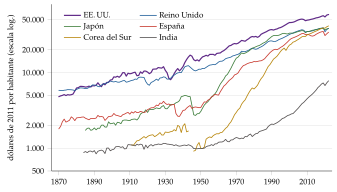
Fuente: elaboración propia a partir de Bolt y van Zanden (2025) (Maddison Project Database 2023, dólares internacionales de 2011).
La disparidad entre países
En niveles: en 1960, la renta por habitante de Estados Unidos era 36 veces la de Etiopía; en 2023, es 117 veces la de Sudán del Sur, el país más pobre con datos. La dispersión ha aumentado: la desviación típica del logaritmo de la renta por habitante entre 96 países (sin los exportadores de petróleo) pasa de 0,96 en 1960 a 1,34 en 2000 y apenas baja después, a 1,27 en 2023.
En ritmos: entre 1960 y 2023, la renta por habitante de 111 países, medida a precios nacionales constantes, creció de media un 1,9 % anual, con una desviación típica de 1,3 puntos: del 6,1 % de China y el 5,4 % de Corea del Sur al \(-1{,}5\) % de la República Democrática del Congo. Corea del Sur multiplicó su renta por 30 y pasó del puesto 89 de 106 países al 28 de 181; el Congo la redujo a menos de la mitad y cayó del puesto 57 al 176.
El ejemplo de esta exposición: Corea del Sur y Nigeria. En 1960 las 2 eran pobres: Corea del Sur tenía una renta por habitante de unos 1.400 dólares (en paridad de poder adquisitivo de 2021) y Nigeria, de unos 2.200. Entre 1960 y 2023, la de Corea del Sur creció un 5,4 % anual y la de Nigeria, un 0,5 %. En 2023, Corea del Sur tiene 52.400 dólares, más que España (46.700), que en 1960 la quintuplicaba; Nigeria, 4.600: la renta de un coreano es 11 veces la de un nigeriano6. ¿Por qué? Es la pregunta que vuelve en cada bloque.
La pregunta que queda: si supiéramos qué hizo crecer a unos y estancarse a otros, sabríamos qué pueden hacer los gobiernos para mejorar el nivel de vida. ¿Fue la apertura, la inversión, la educación o las instituciones lo que aceleró a la India en los 90? Responderlo es el objeto de esta exposición.
I. Contabilidad del crecimiento y productividad total de los factores
Conclusión anticipada: la acumulación de factores explica una parte importante del crecimiento en el tiempo, pero no la mayor parte de las diferencias de renta entre países, que son sobre todo de productividad. La PTF es un residuo: mide todo lo que no medimos, y por eso hay que leerla con cuidado.
Qué es: la contabilidad del crecimiento descompone el crecimiento de la producción en la aportación del capital, la del trabajo y la de la PTF. Estudia las causas próximas; por qué unos países acumulan e innovan más que otros (las causas últimas) queda para el bloque III.
Qué necesita: si pensamos en la producción como renta \(=F\)(factores, productividad), hay que (i) elegir una forma para la función de producción, \(Y=A\,F(K,L)\), y (ii) medir bien la producción, los factores y sus participaciones. Se puede hacer país a país, sin compararlos.
Por dónde empezar: la contabilidad es la vertiente empírica del modelo de Solow. Antes de usarla conviene comprobar que ese modelo reproduce los hechos del crecimiento a largo plazo.
I.1. Los hechos estilizados de Kaldor
Los hechos
Kaldor (1961) resumió en 6 hechos estilizados lo que se sabía del crecimiento de las economías industrializadas, para que cualquier teoría tuviera que reproducirlos. En las economías industrializadas, a largo plazo:
la producción por trabajador crece a una tasa aproximadamente constante, sin tendencia a frenarse;
el capital por trabajador también crece a una tasa sostenida;
el rendimiento real del capital es aproximadamente constante;
la relación capital-producto, \(K/Y\), es aproximadamente constante;
las participaciones del trabajo y del capital en la renta son estables7;
las tasas de crecimiento de la producción y de la productividad difieren mucho entre países.
No son independientes: si \(Y/L\) crece a tasa constante (1) y \(K/Y\) es constante (4), \(K/L=(K/Y)\cdot(Y/L)\) crece al mismo ritmo (2); y si el rendimiento del capital (3) y \(K/Y\) (4) son constantes, también lo es la participación del capital, \(\alpha=r\,K/Y\), y con ella la del trabajo (5). Bastan los hechos 1, 3, 4 y 6.
¿Los reproduce el modelo de Solow?
Una senda de crecimiento equilibrado es aquella en la que todas las variables crecen a tasas constantes; en el modelo de Solow coincide con el estado estacionario, en el que \(\tilde k\) e \(\tilde y\), por unidad de trabajo eficiente, son constantes [ver tema 3.A.43].
En ella, el modelo reproduce los 5 primeros hechos: \(\gamma_{Y/L}=\gamma_{K/L}=g\) y son constantes el rendimiento del capital, \(K/Y=\tilde k^*/f(\tilde k^*)\) y la participación del capital, \(\alpha=\tilde k^*f'(\tilde k^*)/f(\tilde k^*)\). Basta cualquier función de producción neoclásica; con una Cobb-Douglas, las participaciones son constantes también fuera del estado estacionario.
No reproduce el sexto, salvo como dinámica de transición: con convergencia condicional, las diferencias de crecimiento entre países son solo transitorias, y las que persisten se deben a diferencias en el progreso técnico, que el modelo no explica. Es la pregunta del bloque II.
Los hechos con los datos
En Estados Unidos se cumplen a grandes rasgos: la renta por habitante crece en torno al 2 % anual desde 1960 sin tendencia a frenarse, \(K/Y\) no tiene tendencia (3,8 en 1960 y 3,2 en 2023) y la rentabilidad real del capital ronda el 8 % (tabla 1).
En España, \(K/Y\) sube de 4,0 a 6,2 y la rentabilidad baja del 10 % al 7 %: es una economía que ha convergido y que no estaba en su estado estacionario.
El cuarto hecho depende de cómo se mida el capital: si incluye la vivienda y la riqueza a precios de mercado, la relación entre la riqueza privada y la renta nacional de las 8 mayores economías avanzadas ha pasado de 2-3 veces en 1970 a 4-6 veces en 2010.
El quinto es el que más ha cambiado: la participación del trabajo cae desde los 80 en buena parte de las economías avanzadas (apartado I.6 y anexo A). Para la contabilidad del crecimiento importa porque las participaciones son sus ponderaciones.
| Hecho | Estados Unidos | España | Senda equilibrada de Solow |
|---|---|---|---|
| 1. \(Y/L\) crece a tasa constante | 2,0 % anual, sin frenarse | 2,5 % anual, frenándose al converger | \(\checkmark\) \(\gamma_{Y/L}=g\) |
| 2. \(K/L\) crece a tasa sostenida | 1,7 % anual | 3,2 % anual | \(\checkmark\) \(\gamma_{K/L}=g\) |
| 3. Rendimiento real del capital constante | 8,0 % \(\to\) 8,1 % | 9,9 % \(\to\) 6,7 % | \(\checkmark\) \(r^*\) |
| 4. \(K/Y\) constante | 3,8 \(\to\) 3,2 | 4,0 \(\to\) 6,2 | \(\checkmark\) \(\tilde k^*/f(\tilde k^*)\) |
| 5. Participaciones estables | trabajo: 63,7 % \(\to\) 56,8 % | trabajo: 66,7 % \(\to\) 59,4 % | \(\checkmark\) \(\alpha=\tilde k^*f'(\tilde k^*)/f(\tilde k^*)\) |
| 6. Crecimiento muy distinto entre países | 111 países, 1960-2023: media del 1,9 % anual, desviación típica de 1,3 puntos | \(\times\) solo en la transición |
|
Fuente: elaboración propia a partir de Groningen Growth and Development Centre (2025) (Penn World Table 11.0): renta y capital por habitante a precios nacionales constantes, tasa interna de rendimiento real del capital y participación del trabajo ajustada por los autónomos.
Los nuevos hechos de Jones y Romer
Medio siglo después, Jones y Romer (2010) proponen 6 «nuevos hechos de Kaldor» que ponen en el centro las ideas, las instituciones, la población y el capital humano:
los mercados son cada vez más amplios: los flujos de bienes, ideas, capital y personas, con la globalización y la urbanización, amplían el mercado de cada trabajador y de cada empresa;
el crecimiento se ha acelerado: a muy largo plazo, el crecimiento de la población y de la renta por habitante ha pasado de casi cero a tasas apreciables;
la variación de las tasas de crecimiento aumenta con la distancia a la frontera tecnológica: los países cercanos a la frontera crecen a ritmos parecidos; entre los lejanos hay milagros y desastres;
las diferencias de renta y de PTF son enormes: las diferencias en los factores medidos explican menos de la mitad de las diferencias de renta por habitante entre países (apartado I.4);
el capital humano por trabajador aumenta en todo el mundo: es el equivalente del segundo hecho de Kaldor para el capital humano;
los salarios relativos son estables a largo plazo: el aumento de la oferta de trabajo cualificado no ha reducido su salario relativo8.
Lo que piden a la teoría: los hechos 1 a 3 apuntan a las ideas y a los rendimientos crecientes [ver tema 3.A.44]; el cuarto, a la PTF y a las instituciones (apartados I.4 y III.3).
Las regresiones de crecimiento han añadido otras regularidades (el crecimiento sube con el capital humano inicial y la calidad de las instituciones y baja con el consumo público, las distorsiones y la inestabilidad política): se estudian en el bloque III.
Nexo: el modelo neoclásico reproduce casi todos los hechos de la frontera; su vertiente empírica, la contabilidad del crecimiento, mide qué parte del crecimiento se debe a los factores y qué parte a la tecnología.
I.2. Enfoques clásicos de la contabilidad del crecimiento
Hay 2 maneras de medir el residuo: con las cantidades de los factores (el enfoque primal) o con sus precios (el dual). Con los mismos datos dan lo mismo; cuando no, el desacuerdo dice algo de los datos.
I.2.1. El enfoque primal (Solow, 1957)
a) Idea
Un año después de su modelo, Solow (1957) quiere saber qué parte del crecimiento de Estados Unidos entre 1909 y 1949 se debe a que cada trabajador tiene más capital y qué parte al «cambio técnico», entendido en sentido amplio: todo lo que desplaza la función de producción. Es la vertiente empírica de su modelo, en el que solo el progreso técnico sostiene el crecimiento a largo plazo [ver tema 3.A.43].
Recordemos que en ese modelo la acumulación de capital choca con los rendimientos decrecientes, y solo el progreso técnico, exógeno, sostiene el crecimiento a largo plazo. Si el modelo es bueno, una parte grande del crecimiento observado tiene que venir de algo que no es acumular capital.
b) Modelo
i) Supuestos
Una función de producción agregada con progreso técnico neutral en el sentido de Hicks, \(Y=A\,F(K,L)\)9, con rendimientos constantes a escala.
Mercados de factores competitivos: cada factor cobra su producto marginal, de modo que la elasticidad de la producción respecto a cada factor es su participación en la renta, que se observa en la contabilidad nacional. Con rendimientos constantes, el producto se agota (3).
Podemos pensar, sin pérdida de generalidad, en una Cobb-Douglas, \(Y=A\,K^{\alpha}L^{1-\alpha}\), la función más usada en macroeconomía10.
ii) Desarrollo
El análisis de Solow se entiende en 3 pasos.
Paso 1: la función en tasas de crecimiento. Partimos de \(Y_t=A_t\,F(K_t,L_t)\). Tomando logaritmos, \(\ln Y_t=\ln A_t+\ln F(K_t,L_t)\), y derivando respecto al tiempo, \[\frac{\dot Y}{Y}=\frac{\dot A}{A}+\frac{A\,F_K\,K}{Y}\,\frac{\dot K}{K}+\frac{A\,F_L\,L}{Y}\,\frac{\dot L}{L}.\] Con mercados de factores competitivos y el precio del producto igual a 1, cada factor cobra su producto marginal, \(r=A\,F_K\) y \(w=A\,F_L\), de modo que las elasticidades de la producción son las participaciones en la renta: \(A\,F_K\,K/Y=rK/Y=\alpha\) y \(A\,F_L\,L/Y=wL/Y\). Con rendimientos constantes a escala, por el teorema de Euler las 2 suman 1, y \(wL/Y=1-\alpha\): \[\gamma_Y=\gamma_A+\underbrace{\frac{rK}{Y}}_{\alpha}\gamma_K+\underbrace{\frac{wL}{Y}}_{1-\alpha}\gamma_L .\] La tasa de crecimiento de la producción se divide así en la del progreso técnico y la aportación de cada factor, que es su crecimiento por su elasticidad (su participación).
Paso 2: despejar lo que no se observa. Todo se observa en la contabilidad nacional salvo \(\gamma_A\), que se obtiene como un residuo tras restar la aportación de los factores: es el residuo de Solow, el crecimiento de la PTF,
\[\gamma_A=\gamma_Y-\alpha\,\gamma_K-(1-\alpha)\,\gamma_L\tag{1}\]
Paso 3: por hora trabajada, que es como lo hace Solow: con rendimientos constantes, restando \(\gamma_L\) a los 2 lados, \(\gamma_Y-\gamma_L=\gamma_A+\alpha(\gamma_K-\gamma_L)\), es decir, \[\gamma_{Y/L}=\gamma_A+\alpha\,\gamma_{K/L}:\tag{2}\] el crecimiento de la producción por hora se reparte entre el del progreso técnico y la aportación del capital por hora.
Con más factores y en tiempo discreto: si el trabajo se mide en unidades de eficiencia, \(hL\), con \(h\) el capital humano por trabajador, \(\gamma_A=\gamma_Y-\alpha\,\gamma_K-(1-\alpha)\,\gamma_L-(1-\alpha)\,\gamma_h\), y \((1-\alpha)\gamma_h\) es la aportación del capital humano; en general, \(\gamma_A=\gamma_Y-\sum_i\alpha_i\gamma_{X_i}\). Con datos anuales, las tasas son diferencias de logaritmos y las participaciones, la media de los 2 años, \(\bar\alpha_t=(\alpha_t+\alpha_{t-1})/2\) (el índice de Törnqvist): \[\ln\frac{A_t}{A_{t-1}}=\ln\frac{Y_t}{Y_{t-1}}-\bar\alpha_t\ln\frac{K_t}{K_{t-1}}-(1-\bar\alpha_t)\ln\frac{L_t}{L_{t-1}}-(1-\bar\alpha_t)\ln\frac{h_t}{h_{t-1}} .\] Es lo que hace el gráfico 4: en España, entre 1996 y 2007, el PIB creció un 3,60 % anual; el capital aportó 1,78 puntos, las horas 1,96 y el capital humano 0,37, y el residuo es \(3{,}60-1{,}78-1{,}96-0{,}37=-0{,}51\) puntos.
Dos formas de escribir la tecnología. La contabilidad del crecimiento escribe la PTF multiplicando a toda la función, \(Y=A\,K^{\alpha}L^{1-\alpha}\) (neutral en el sentido de Hicks). El modelo de Solow escribe el progreso técnico como aumentador del trabajo, \(Y=K^{\alpha}(A^{\mathrm{H}}L)^{1-\alpha}\), con \(A^{\mathrm{H}}\) creciendo a \(g\) [ver tema 3.A.43]11. Con una Cobb-Douglas son la misma tecnología: \(Y=(A^{\mathrm{H}})^{1-\alpha}K^{\alpha}L^{1-\alpha}\), una tecnología neutral en el sentido de Hicks con PTF \(A=(A^{\mathrm{H}})^{1-\alpha}\), que crece a \(\gamma_A=(1-\alpha)\,g\). En la senda equilibrada, \(\gamma_{K/L}=\gamma_{Y/L}=g\), y (2) atribuye \(\alpha g\) al capital y \((1-\alpha)g\) a la PTF, aunque todo el crecimiento lo cause la tecnología (apartado I.5). En este tema, \(A\) es la PTF de Hicks en la contabilidad del crecimiento y aumenta el trabajo en la contabilidad del desarrollo (apartado I.4), como en los artículos que se citan.
iii) Implicaciones
Los resultados de Solow: con datos de Estados Unidos entre 1909 y 1949, Solow (1957, 316 y 320) encuentra que la producción bruta por hora trabajada del sector privado no agrario se duplicó y que el mayor equipamiento de capital por hora explica apenas 1/8 del avance (12,5 %). Los 7/8 restantes (87,5 %) son el residuo, que atribuye al cambio técnico.
El cambio técnico fue, en promedio, neutral, y desplazó la función de producción alrededor de un 1 % anual en la primera mitad del periodo y de un 2 % en la segunda.
Qué es el residuo: todo lo que hace crecer la producción y no es más horas ni más máquinas: progreso técnico, pero también mejor organización, mejor asignación de los recursos, mejor calidad de los factores que no se mide y errores de medida.
c) Valoración
Aportación: abre un programa de investigación que sigue vivo: medir mejor los factores para que el residuo sea cada vez más «progreso técnico» y menos «ignorancia» (apartado I.5). Fuera de la contabilidad, el residuo de Solow se convierte en la perturbación de productividad de los modelos del ciclo real: como se mueve casi a la par que el PIB, sus fluctuaciones pueden explicar las de la producción [ver tema 3.A.42].
Críticas:
la competencia perfecta: si hay poder de mercado, las participaciones no son las elasticidades de la producción y el residuo está sesgado. Lo intentan evitar el enfoque dual y el econométrico;
participaciones estables: el cálculo con \(\alpha\) constante las da por supuestas; la evidencia lo avala a grandes rasgos, aunque la del trabajo ha caído en las últimas décadas (apartado I.6);
la separación entre factores y tecnología es artificial: para Kaldor (1957), el progreso técnico llega incorporado en el capital nuevo, de modo que distinguir entre moverse a lo largo de la función de producción y desplazarla no tiene sentido; en su lugar propone una función de progreso técnico que relaciona el crecimiento de la productividad con el de la inversión;
el residuo es lo que no se explica: ya antes que Solow, Abramovitz (1956, 11) había encontrado un residuo enorme con otros datos y lo llamó una «medida de nuestra ignorancia» sobre las causas del crecimiento. Para Jorgenson y Griliches (1967), las mejoras que cuestan recursos, como la investigación o la formación, son factores, no «maná caído del cielo», y deben salir del residuo;
la contabilidad no es causalidad: el capital crece porque crece la PTF (apartado I.5).
I.2.2. El enfoque dual (Hsieh, 2002)
a) Idea
Medir la PTF con los precios de los factores en lugar de con sus cantidades. Si la productividad sube, la economía puede pagar más a los 2 factores a la vez; si solo se acumula capital, su rendimiento cae. Hsieh (2002) lo usa para revisar los «milagros» del este de Asia con menos supuestos que Solow.
b) Modelo
i) Supuestos
Uno solo: la renta se reparte entera entre los factores, con los precios que se observan en los mercados (el agotamiento del producto, que dan los rendimientos constantes): \[Y=r\,K+w\,L .\tag{3}\]
No hace falta suponer una forma funcional ni un tipo de progreso técnico, ni medir el stock de capital. Sí hace falta que los precios observados sean los que agotan el producto, lo que en la práctica vuelve a pedir mercados de factores que funcionen bien.
ii) Desarrollo
Paso 1: derivar respecto al tiempo \(Y=rK+wL\): \[\dot Y=\left(\dot r\,K+r\,\dot K\right)+\left(\dot w\,L+w\,\dot L\right).\]
Paso 2: dividir por \(Y\) y multiplicar y dividir cada término por su precio o su cantidad: \[\frac{\dot Y}{Y}=\underbrace{\frac{rK}{Y}}_{\alpha}\left(\frac{\dot r}{r}+\frac{\dot K}{K}\right)+\underbrace{\frac{wL}{Y}}_{1-\alpha}\left(\frac{\dot w}{w}+\frac{\dot L}{L}\right).\]
Paso 3: pasar a la izquierda las cantidades. Como el residuo de Solow es el crecimiento que no se explica por la acumulación de los factores, el residuo primal es igual a una media ponderada del crecimiento de los precios de los factores: \[\gamma_A=\underbrace{\gamma_Y-\alpha\,\gamma_K-(1-\alpha)\,\gamma_L}_{\text{primal}}=\underbrace{\alpha\,\gamma_r+(1-\alpha)\,\gamma_w}_{\text{dual}},\tag{4}\] que, escrita con las participaciones a la vista, es \[\text{Residuo de Solow}\equiv\underbrace{\frac{\dot Y}{Y}-\frac{r\,K}{Y}\,\frac{\dot K}{K}-\frac{w\,L}{Y}\,\frac{\dot L}{L}}_{\text{Enfoque primal}}=\underbrace{\frac{r\,K}{Y}\,\frac{\dot r}{r}+\frac{w\,L}{Y}\,\frac{\dot w}{w}}_{\text{Enfoque dual}} .\] A la izquierda, el enfoque primal (cantidades); a la derecha, el dual (precios).
Intuición: sin progreso técnico, la economía se mueve sobre su frontera de precios de los factores: con rendimientos constantes, si sube el salario tiene que bajar el coste de uso del capital, y la media ponderada de sus tasas es cero.
si el producto crece porque se acumula capital, los rendimientos decrecientes bajan su producto marginal y su precio, \(r\); como el capital es complementario del trabajo, el salario sube;
si crece porque se acumula trabajo, baja el salario y sube \(r\);
que suban los 2 precios a la vez solo es posible si la frontera se desplaza: eso es la PTF.
iii) Implicaciones
Con los mismos datos, primal y dual dan lo mismo: es una identidad contable12. Si difieren, es porque las cantidades de la contabilidad nacional y los precios observados en los mercados no son coherentes entre sí, y eso dice algo de la calidad de los datos.
c) Evidencia empírica: el debate de los tigres asiáticos
Young (1995) encuentra con el enfoque primal que el crecimiento de Hong Kong, Corea del Sur, Singapur y Taiwán se debió sobre todo a acumular capital, a incorporar trabajadores y a educarlos; en Singapur, la PTF apenas creció, un 0,2 % anual entre 1966 y 1990. Krugman (1994) lo divulga: un crecimiento por acumulación, como el soviético, acabaría frenándose. Como dice el refrán, «las apariencias engañan»: un crecimiento de milagro puede ser solo acumulación.
Volvamos a Corea del Sur: según estas cuentas, su despegue fue sobre todo inversión, horas y escuela, que es lo que Nigeria no tuvo; la productividad vino después.
Hsieh (2002) llega a otra conclusión con el dual: en Singapur, el rendimiento del capital apenas cae a pesar de la enorme acumulación que registran las cuentas nacionales, y la PTF dual crece unos 2 puntos más al año que la primal. Para Hsieh, el problema está en las cuentas nacionales, que sobrestiman la inversión.
Young (1998) replica que, corregidos algunos errores de cálculo y de método, las estimaciones duales quedan cerca de las primales, y que otros datos confirman la caída del rendimiento real del capital.
d) Valoración
Ventajas: menos supuestos, y precios a menudo más fáciles de observar que las cantidades de capital.
Limitaciones: los precios observados (tipos de interés, rentabilidades financieras) no siempre son el rendimiento del capital físico, sobre todo con mercados financieros reprimidos o intervenidos. Si el primal y el dual discrepan, falla algún dato: o las cantidades (una hipótesis que se ha propuesto es que las cifras oficiales de inversión se inflaran para presentar mejores resultados, mientras que los precios de mercado no se pueden maquillar) o los precios.
Ninguno de los 2 resuelve el problema de fondo: el residuo sigue siendo lo que no se mide. Por eso se busca estimarlo.
I.3. El enfoque econométrico
a) Idea
En lugar de tomar las elasticidades de las participaciones en la renta, estimarlas con una regresión del crecimiento de la producción sobre el de los factores. La constante es el crecimiento medio de la PTF.
b) Modelo
Con datos de un país en el tiempo o de varios países, se estima por mínimos cuadrados \[\gamma_{Y,t}=\underbrace{\beta_0}_{\substack{\text{crecimiento}\\\text{medio de la PTF}}}+\underbrace{\beta_1}_{\substack{\text{elasticidad de}\\\text{la producción}\\\text{al capital}}}\gamma_{K,t}+\underbrace{\beta_2}_{\substack{\text{elasticidad de}\\\text{la producción}\\\text{al trabajo}}}\gamma_{L,t}+u_t ,\tag{5}\] donde \(\beta_0\), la constante, estima el crecimiento medio de la PTF (el residuo de Solow medio), y \(\beta_1\) y \(\beta_2\), las elasticidades de la producción respecto al capital y al trabajo, que el enfoque primal toma de las participaciones (\(\alpha\) y \(1-\alpha\)) y aquí se estiman. A diferencia de (1), que es una identidad, aquí hay un término de error, \(u_t\).
c) Valoración
Ventaja: no supone que los factores cobren su producto marginal.
Problemas:
simultaneidad: las empresas eligen los factores sabiendo su productividad, de modo que los factores están correlacionados con la PTF y los coeficientes salen sesgados, un problema conocido desde Marschak y Andrews (1944) (anexo B);
el residuo no es exógeno: Hall (1988, 1990) muestra que el residuo de Solow se mueve con variables que no deberían afectar a la tecnología, como el gasto militar, el precio del petróleo o el partido del presidente; la explicación es el poder de mercado o los rendimientos crecientes;
elasticidades que cambian: en economías que se transforman deprisa, como las del este de Asia, el peso de los factores cambia en pocos años, y estimarlo como constante con datos de varias décadas lo sesga.
| Primal | Dual | Econométrico | |
|---|---|---|---|
| Supuestos | \(Y=A\,F(K,L)\), rendimientos constantes, competencia | \(Y=rK+wL\) | Ninguno sobre los precios |
| Fórmula | \(\gamma_A=\gamma_Y-\alpha\gamma_K-(1-\alpha)\gamma_L\) | \(\gamma_A=\alpha\gamma_r+(1-\alpha)\gamma_w\) | \(\gamma_{Y,t}=\beta_0+\beta_1\gamma_{K,t}+\beta_2\gamma_{L,t}+u_t\) |
| Datos | Cantidades y participaciones | Precios de los factores y participaciones | Cantidades |
| Problema | Medir los factores y su calidad | Precios observados distintos de los rendimientos | Simultaneidad |
Fuente: elaboración propia.
I.4. El enfoque moderno: la contabilidad del desarrollo
La idea
Aplicar la misma lógica a los niveles de renta de distintos países en un año, en lugar de a las tasas de un país en el tiempo. ¿Cuánto de la diferencia entre Corea del Sur y Nigeria se debe a que tiene más capital físico, más capital humano o más productividad?
La herramienta: con \(Y=K^{\alpha}(A\,h\,L)^{1-\alpha}\), donde \(h=e^{\phi(S)}\) es el capital humano por trabajador según los años de estudio \(S\) y lo que el mercado paga por cada año, tomado de las ecuaciones de Mincer [ver tema 3.A.25]13, se despeja la renta por trabajador en 2 pasos. Dividiendo los 2 lados por \(Y^{\alpha}\), \[Y^{1-\alpha}=\left(\frac{K}{Y}\right)^{\alpha}(A\,h\,L)^{1-\alpha},\] y elevando a \(1/(1-\alpha)\) y dividiendo por \(L\), \[\frac{Y}{L}=\left(\frac{K}{Y}\right)^{\frac{\alpha}{1-\alpha}}h\,A .\tag{6}\]
Por qué \(K/Y\) y no \(K/L\): en el modelo de Solow, un país más productivo acumula más capital porque es más productivo; con \(K/Y\), ese capital se atribuye a la productividad, que es su causa (apartado I.5).
Para comparar 2 países (o grupos), se dividen sus ecuaciones: el cociente de las rentas por trabajador es el producto de los cocientes de los 3 términos. En logaritmos, \(\ln(Y/L)=\frac{\alpha}{1-\alpha}\ln(K/Y)+\ln h+\ln A\), y la parte de cada factor en la diferencia de logaritmos es su peso.
La estimación de Mankiw, Romer y Weil (1992)
Qué estiman: la ecuación de la renta del modelo de Solow ampliado con capital humano [ver tema 3.A.43], en forma de regresión entre países: \[\ln\frac{Y_i}{L_i}=a+\frac{\alpha}{1-\alpha-\beta}\ln s_{K,i}+\frac{\beta}{1-\alpha-\beta}\ln s_{H,i}-\frac{\alpha+\beta}{1-\alpha-\beta}\ln(n_i+g+\delta)+\varepsilon_i ,\tag{7}\] con datos de 1960 a 1985: \(s_K\) es la tasa de inversión; \(s_H\), el porcentaje de la población en edad de trabajar matriculado en secundaria; \(n\), el crecimiento de esa población, y \(g+\delta=0{,}05\). El término \(\ln A_0+g\,t\) se reparte entre la constante \(a\) y la perturbación \(\varepsilon_i\), que se supone independiente de las tasas de inversión y de \(n\).
Resultados: sin capital humano, el ahorro y la población explican el 59 % de la varianza de la renta, pero con una participación implícita del capital de 0,60, el doble de la observada; con capital humano, el 78 %, con \(\alpha\simeq0{,}31\) y \(\beta\simeq0{,}28\), muy cerca de lo que predice el modelo. En la OCDE, en cambio, el ajuste es muy pobre (tabla 3).
Valoración: la acumulación de factores, bien medida, parece explicarlo casi todo. Pero la matrícula en secundaria exagera las diferencias de capital humano entre países, y suponer que el nivel de la tecnología es independiente de la inversión es poco creíble: los países con mejores instituciones invierten más y son más productivos. Lo corrige la contabilidad del desarrollo.
Los resultados de Mankiw, Romer y Weil, y su réplica con datos actuales. La tabla 3 recoge las regresiones restringidas del artículo. Entre 1960 y 2023, con 78 países, la \(\alpha\) implícita sin capital humano es 0,64 y el \(R^2\) ajustado pasa de 0,54 a 0,76 al añadir un índice de capital humano14: la renta que predice el modelo ampliado sigue de cerca a la observada (gráfico 2).
| Muestra | No petroleros | Intermedia | OCDE |
| Número de países | 98 | 75 | 22 |
| Modelo de Solow | |||
| \(R^2\) ajustado | 0,59 | 0,59 | 0,01 |
| \(\alpha\) implícita | 0,60 | 0,59 | 0,36 |
| Modelo ampliado con capital humano | |||
| \(R^2\) ajustado | 0,78 | 0,77 | 0,24 |
| \(\alpha\) implícita | 0,31 | 0,29 | 0,14 |
| \(\beta\) implícita | 0,28 | 0,30 | 0,37 |
Fuente: Mankiw, Romer y Weil (1992, tablas I y II); regresiones restringidas, con \(g+\delta=0{,}05\).
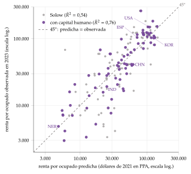
Fuente: elaboración propia a partir de Groningen Growth and Development Centre (2025) (Penn World Table 11.0; 78 países no petroleros con al menos un millón de habitantes; tasas de inversión y de crecimiento del empleo, medias de 1960-2023).
El trabajo de Hall y Jones (1999)
Qué hacen: no estiman, sino que calibran. Aplican (6) a 127 países en 1988, con \(\alpha=1/3\), el capital por el método del inventario permanente y \(h\) con los rendimientos de Mincer, y obtienen la PTF de cada país como lo que falta.
Resultado: la producción por trabajador de los 5 países más ricos es 31,7 veces la de los 5 más pobres. La intensidad de capital aporta un factor de 1,8, el capital humano otro de 2,2 y la productividad, uno de 8,3 (\(1{,}8\times2{,}2\times8{,}3\simeq31{,}7\), con medias geométricas para que la descomposición sea exacta). Sin diferencias de productividad, los ricos solo producirían unas 4 veces más15.
Implicación: la productividad va casi a la par que la renta; las diferencias de renta entre países son, sobre todo, diferencias de \(A\).
Volvamos a Corea del Sur y Nigeria: en 2023, un ocupado coreano produce 8 veces más que uno nigeriano. Por capital no es, porque Nigeria tiene una relación capital-producto mayor; el capital humano aporta un factor de 1,8, y la productividad, uno de 6,2. Casi toda la diferencia es \(A\).
Segunda parte del artículo: atribuyen las diferencias de productividad a la infraestructura social, las instituciones y políticas que favorecen producir frente a apropiarse de lo ajeno, y la instrumentan con la distancia al ecuador y con la proporción de la población que habla una lengua de Europa occidental. Es el antecedente de Acemoglu, Johnson y Robinson (2001a) (apartado III.3).
Las cifras de Hall y Jones y su réplica con datos actuales.
La correlación entre los logaritmos de la PTF y de la producción por trabajador es 0,89 (su cuadrado, 0,79, es la parte de la varianza de una que acompaña a la otra). Entre los países de mayor PTF estaban Italia, Francia, Hong Kong y España.
Con datos de 2023, el patrón se mantiene y se acentúa. Sin los exportadores de petróleo ni los centros financieros, cuya producción medida exagera su productividad, la brecha entre los 5 países más productivos y los 5 menos es de 47,1 veces, con un factor de 1,07 del capital, 2,29 del capital humano y 19,1 de la PTF (tabla 4 y gráfico 3).
Corea del Sur y Nigeria en logaritmos: \(\ln 8{,}1=2{,}09\); capital, \(\ln0{,}72=-0{,}33\); capital humano, \(\ln1{,}82=0{,}60\); productividad, \(\ln6{,}2=1{,}82\). La productividad explica casi el 90 % de la diferencia de logaritmos; el capital la reduce.
| 5 más ricos / 5 más pobres, 1988 | 5 más ricos / 5 más pobres, 2023 | Corea del Sur / Nigeria, 2023 | |
|---|---|---|---|
| Producción por trabajador, \(Y/L\) | 31,7 | 47,1 | 8,1 |
| Capital, \((K/Y)^{\alpha/(1-\alpha)}\) | 1,8 | 1,07 | 0,7 |
| Capital humano, \(h\) | 2,2 | 2,29 | 1,8 |
| Productividad, \(A\) | 8,3 | 19,1 | 6,2 |
Fuente: 1988: Hall y Jones (1999, 92), 127 países. 2023: elaboración propia a partir de Groningen Growth and Development Centre (2025) (Penn World Table 11.0), sin exportadores de petróleo ni centros financieros en la columna de los 5 más ricos y los 5 más pobres, con \(\alpha=1/3\); medias geométricas; Nigeria es exportadora de petróleo.
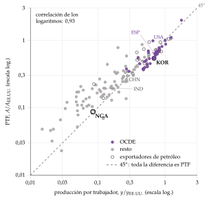
Caselli (2005) y la evidencia actual
La pregunta: si todos los países tuvieran la misma PTF, ¿qué parte de las diferencias de renta reproducirían los factores? Caselli (2005) escribe \(Y/L=A\,(K/L)^{\alpha}h^{1-\alpha}\)16, llama \((Y/L)_{KH}\equiv(K/L)^{\alpha}h^{1-\alpha}\) a la renta que darían solo el capital físico y el humano, y descompone la varianza del logaritmo de la renta: \[\mathrm{var}\left[\ln\frac{Y}{L}\right]=\mathrm{var}\left[\ln\left(\frac{Y}{L}\right)_{KH}\right]+\mathrm{var}\left[\ln A\right]+2\,\mathrm{cov}\left[\ln\left(\frac{Y}{L}\right)_{KH},\ln A\right].\]
Mide el «éxito» de los factores con 2 cocientes, que valdrían 1 si todo fueran factores: \[\text{éxito}_1=\frac{\mathrm{var}\left[\ln(Y/L)_{KH}\right]}{\mathrm{var}\left[\ln(Y/L)\right]},\qquad \text{éxito}_2=\frac{(Y/L)_{KH}^{90}\,/\,(Y/L)_{KH}^{10}}{(Y/L)^{90}\,/\,(Y/L)^{10}},\] donde los superíndices 90 y 10 son los percentiles.
Resultados: con datos de 1996, el éxito es de 0,39 (0,34 con los percentiles): los factores explican algo menos del 40 % de las diferencias de renta; el resto es productividad. El resultado resiste a cambios en la participación del capital, la muestra, la depreciación, el capital inicial, la medida de la educación, la experiencia, las horas y la calidad de la educación. Con datos de 2023 y 143 países, el éxito baja a 0,30.
La conclusión de la contabilidad del desarrollo, la misma en Klenow y Rodríguez-Clare (1997), Hall y Jones (1999) y Caselli (2005): la mayor parte de las diferencias de renta entre países es productividad, y el capital humano explica menos de lo que sugería la estimación de Mankiw, Romer y Weil. Es el cuarto «nuevo hecho» de Jones y Romer (2010).
Recapitulación: Mankiw, Romer y Weil decían «casi todo es acumulación»; la contabilidad del desarrollo dice «casi todo es productividad». Por eso la pregunta pasa a ser qué determina la productividad (apartado III.3).
| Mankiw, Romer y Weil (1992) | Hall y Jones (1999) | Caselli (2005) | |
|---|---|---|---|
| Función | \(Y=K^{\alpha}H^{\beta}(AL)^{1-\alpha-\beta}\) | \(Y=K^{\alpha}(AhL)^{1-\alpha}\), \(h=e^{\phi(S)}\) | \(Y/L=A(K/L)^{\alpha}h^{1-\alpha}\) |
| Método | Regresión de \(\ln(Y/L)\) sobre \(s_K\), \(s_H\) y \(n+g+\delta\), con \(g+\delta=0{,}05\); 98 países, 1960-1985 | Calibración con \(\alpha=1/3\); 127 países, 1988 | Calibración con \(\alpha=1/3\); descomposición de la varianza |
| Resultado | Sin \(H\): \(R^2=0{,}59\), \(\alpha=0{,}60\). Con \(H\): \(R^2=0{,}78\), \(\alpha=0{,}31\), \(\beta=0{,}28\) | 5 más ricos / 5 más pobres: \(31{,}7=1{,}8\times2{,}2\times8{,}3\); correlación de \(\ln A\) y \(\ln(Y/L)\), 0,89 | Éxito\(_1\) = 0,39, éxito\(_2\) = 0,34 (1996); 0,30 en 2023 |
| Lectura | Casi todo es acumulación | Casi todo es productividad | Los factores explican menos del 40 % |
Fuente: elaboración propia a partir de Mankiw, Romer y Weil (1992), Hall y Jones (1999), Caselli (2005) y, para 2023, Groningen Growth and Development Centre (2025).
I.5. Problemas de la contabilidad del crecimiento
La medición de los factores (Jorgenson y Griliches, 1967)
El capital: se construye con el método del inventario permanente, acumulando la inversión de cada año y restando la depreciación estimada, \(K_{t+1}=(1-\delta)\,K_t+I_t\). Tiene 2 problemas:
lo que produce es el flujo de servicios del capital (las horas de máquina), no el stock, que es lo que se mide; se supone que son proporcionales;
el capital es heterogéneo, con vidas útiles y rendimientos distintos. Se puede agregar con el coste de uso de cada tipo (el índice de servicios del capital, lo pertinente para la producción) o con sus precios de compra (el stock de riqueza, lo pertinente para el balance). Como los activos informáticos se deprecian deprisa y tienen un coste de uso alto, el índice de servicios crece más que el de riqueza y deja menos residuo.
El trabajo: mejor horas que ocupados, y con su composición. La calidad del trabajo se mide con ecuaciones de salarios como las de Mincer (1974), que dan el rendimiento de cada año de estudio [ver tema 3.A.25], o con la proporción de titulados universitarios; ninguna recoge bien las diferencias de calidad de la educación entre países.
La calidad: si la calidad de los factores mejora y no se mide, su mejora aparece como PTF. Corrigiendo la calidad del capital y del trabajo y la utilización del capital, Jorgenson y Griliches (1967) encuentran que el residuo de Estados Unidos en 1945-1965 casi desaparece, de un 1,6 % a un 0,1 % anual: los factores explican el 96,7 % del crecimiento. El debate con Edward Denison llevó a revisar esos ajustes, y el residuo volvió a ser apreciable; desde entonces, las estadísticas oficiales de productividad (EU KLEMS en Europa, la Oficina de Estadísticas Laborales en Estados Unidos) miden los servicios del capital y la composición del trabajo.
La producción: en los servicios y en el sector público es difícil de medir. Las cuentas nacionales valoran la producción de las administraciones públicas por su coste, sobre todo los sueldos, de modo que su productividad medida apenas cambia.
¿Producción bruta o valor añadido?
La contabilidad puede hacerse con la producción bruta, con el capital, el trabajo y los consumos intermedios como factores, o con el valor añadido bruto (VAB), solo con el capital y el trabajo.
A favor de la producción bruta: es la que tiene una función de producción bien definida en cada empresa o sector, con supuestos menos restrictivos, y recoge todo lo que sale de los factores.
En contra: depende de la integración vertical. Si 2 empresas se fusionan, los consumos intermedios entre ellas desaparecen y la PTF medida cambia sin que cambie la tecnología. Con el valor añadido no pasa, y es lo que se suma de los sectores a la economía. Por eso la PTF agregada se mide sobre el valor añadido, o se agregan las de producción bruta de cada sector con los pesos de Domar (su producción bruta sobre el valor añadido total).
Contabilidad frente a causalidad
La contabilidad dice qué parte del crecimiento acompaña a cada factor, no qué lo causa: los factores no caen del cielo.
El ejemplo del modelo de Solow [ver tema 3.A.43]: en el estado estacionario, \(K/Y\) es constante y el capital crece al ritmo \(n+g\). La contabilidad atribuye al capital una parte \(\alpha g\) del crecimiento por trabajador y a la PTF el resto, \((1-\alpha)g\); pero sin progreso técnico el capital no habría crecido: la causa de todo el crecimiento por trabajador es la tecnología. Como dice el refrán, «unos cardan la lana y otros llevan la fama»: el capital se lleva la fama de lo que hizo la tecnología.
La corrección: medir la aportación del capital por los cambios de \(K/Y\) y no de \(K/L\). Con \(Y=A\,K^{\alpha}L^{1-\alpha}\) y \(K/L=(K/Y)\cdot(Y/L)\), \[\gamma_{Y/L}=\frac{\gamma_A}{1-\alpha}+\frac{\alpha}{1-\alpha}\,\gamma_{K/Y},\tag{8}\] y con \(K/Y\) constante, todo el crecimiento por trabajador se atribuye a la productividad. Es lo que hace (6) en niveles.
Más allá: si la PTF es endógena (la investigación, el aprendizaje), tampoco ella es la causa última: hay que preguntarse por qué unos países innovan y otros no [ver tema 3.A.44].
I.6. Evidencia empírica sobre la productividad total de los factores
Las fuentes del crecimiento en el mundo
Entre 1960 y 2000, en 84 países que suman casi todo el PIB mundial, la producción creció un 4 % anual y la producción por trabajador un 2,3 %. El capital físico por trabajador aportó 1 punto (el 43 %), la educación 0,3 (el 13 %) y la PTF 0,9 (el 39 %). En el este de Asia pesa más el capital, como decía Young (1995).
Cuando se mide el capital humano, la PTF es menor: los estudios que no lo miden la sobrevaloran.
España, la zona del euro y Estados Unidos
España: el crecimiento de 1996 a 2007 fue de acumulación, no de productividad. De un crecimiento del PIB del 3,6 % anual, 1,8 puntos los aportó el capital, 2,0 las horas trabajadas y 0,4 el capital humano; la PTF restó medio punto. Restó también en la crisis (0,8 puntos en 2008-2013), sumó 0,6 en la recuperación de 2014-2019 y apenas se ha movido en 2020-2025 (gráfico 4). En 1971-1985, en cambio, la PTF aportaba 2 de los 2,8 puntos de crecimiento: el problema de productividad de España empieza a mediados de los 90 [ver tema 4.A.27].
La zona del euro: la PTF aportó medio punto en 1996-2007 y 0,6 en 2014-2019, y restó en 2008-2013 y en 2020-2024.
Estados Unidos: la PTF aportó 1,2 puntos en 1996-2007, con el auge de las tecnologías de la información y la comunicación (TIC), y 0,8 en 2020-2025: es la principal diferencia con Europa.
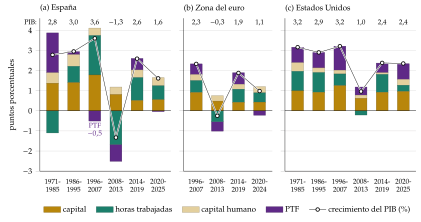
La desaceleración de la PTF
Los hechos: la PTF del sector empresarial de Estados Unidos creció un 2,1 % anual entre 1948 y 1973 y un 0,5 % entre 1974 y 1995; se recuperó con las TIC (1,8 % entre 1996 y 2004) y volvió al 0,5 % entre 2005 y 2019. Desde 1970 ha crecido, de media, un 0,9 %; entre 2020 y 2025, un 1,1 %. Denison (1985) fue de los primeros en documentar el frenazo de los 70, que después se confirmó en casi todos los países avanzados.
Las explicaciones:
el petróleo en los 70: poco convincente, porque la PTF no se recuperó cuando el petróleo se abarató;
los errores de medida: los servicios digitales gratuitos no entran en el PIB. Syverson (2017) lo descarta como explicación principal: la desaceleración se da en decenas de países con independencia de su intensidad en TIC, y el excedente estimado de esos servicios está muy por debajo de la producción «perdida»; Byrne, Fernald y Reinsdorf (2016) llegan a lo mismo;
el cambio estructural hacia los servicios, en los que la productividad crece menos (la enfermedad de los costes de Baumol);
las ideas son cada vez más difíciles de encontrar: desde los años 30, el esfuerzo investigador de Estados Unidos se ha multiplicado por 23 y la productividad de la investigación ha caído por un factor de 41, un 5 % al año [ver tema 3.A.44]; para Gordon (2016), las grandes invenciones del siglo XX no se repetirán;
la mala asignación de los recursos entre empresas y la menor competencia y entrada de empresas. En España pesa especialmente: entre 1995 y 2007, el capital se dirigió a empresas y sectores poco productivos;
la curva en J: las tecnologías de propósito general, como la inteligencia artificial (IA), exigen antes inversiones intangibles que no se miden, de modo que la productividad medida baja primero y sube después. Las estimaciones del efecto de la IA van de menos de un punto de PTF acumulado en una década a un repunte sostenido.
La PTF no es la productividad del trabajo17: la productividad aparente del trabajo, \(Y/L\), sube también si se acumula capital; la PTF, solo si los factores se usan mejor. En España, la productividad por hora tiende a subir en las recesiones porque se destruye sobre todo empleo poco productivo, como el de la construcción: es un efecto composición, no más PTF.
La participación de los factores en la renta
Las ponderaciones: la participación del capital, \(\alpha\), se ha movido entre 0,3 y 0,5 en 23 países avanzados de la OCDE desde 1960, con una mediana de 0,38; con el ajuste de los autónomos, la del trabajo está entre el 65 y el 80 % en casi todos los países, sin relación con su nivel de renta, lo que avala una \(\alpha\) en torno a 1/3.
Su evolución: estable durante la posguerra, como decía Kaldor, la participación del trabajo cae desde los 80, unos 5 puntos en el mundo; en Estados Unidos, la participación salarial ajustada baja del 61 % de 2000 al 54 % en 2025, y en España se mueve entre el 53 y el 58 % desde 2007. Para la contabilidad, obliga a usar participaciones que cambian con el tiempo. La teoría del reparto, sus medidas y las explicaciones de la caída están en el anexo A.
Recapitulación y nexo: la contabilidad del crecimiento separa factores y productividad, pero describe, no explica. En el tiempo, la acumulación pesa mucho, más en los milagros asiáticos y en la España de 1996-2007; entre países, la productividad explica la mayor parte de las diferencias de renta. Si las diferencias de productividad son tan grandes, ¿se acercan los países pobres a los ricos? Pasamos a la pregunta que enfrenta a los modelos, la convergencia, y a los factores que hay detrás.
II. Evidencia empírica sobre la convergencia
Conclusión anticipada: los países pobres no han alcanzado a los ricos en la segunda mitad del siglo XX; sí lo hacen las economías parecidas, a un ritmo lento, de en torno al 2 % anual, y desde 2000 asoma algo de convergencia también en el mundo.
Nexo: la contabilidad describe a cada país por separado; la convergencia los compara. Es, además, la prueba que se usó para elegir entre los modelos neoclásicos y los de crecimiento endógeno.
II.1. Definiciones de convergencia
La idea
La convergencia es la reducción de las diferencias de renta por habitante entre economías, países o regiones. Esta exposición trata la convergencia real; la nominal (inflación, tipos de interés, déficit y deuda) es la de los criterios de Maastricht [ver tema 3.B.40].
Por qué importa: es la principal predicción contrastable del modelo de Solow. Con rendimientos decrecientes, el capital rinde más donde escasea, y una economía crece más deprisa cuanto más lejos está de su estado estacionario [ver tema 3.A.43]. En los modelos de crecimiento endógeno con rendimientos constantes del capital en sentido amplio, en cambio, no hay convergencia [ver tema 3.A.44].
Las definiciones de Sala-i-Martín
Las nociones de convergencia \(\beta\) y \(\sigma\) se deben a Sala-i-Martín, en su tesis de 1990, y a Barro y Sala-i-Martin (1991). Con \(y_{t}\) la renta por habitante de una economía en \(t\) y \(\gamma^{y}_{t,t-1}\) su tasa de crecimiento entre \(t-1\) y \(t\):
Hay convergencia \(\beta\) si las economías con menor renta por habitante crecen más que las de mayor renta: la tasa de crecimiento es una función decreciente de la renta inicial. Se contrasta con una regresión entre economías del crecimiento sobre la renta inicial:
\[\gamma^{y}_{t,t-1}=\beta_0+\beta_1\ln y_{t-1}+\vec{\eta}\cdot\vec{z}_{t-1}+u_t\tag{9}\]
donde \(\vec{z}_{t-1}\) son los determinantes del estado estacionario de cada economía (la tasa de ahorro o de inversión, el crecimiento de la población, la escolarización), \(\vec{\eta}\) sus coeficientes y \(u_t\) una perturbación que recoge los choques transitorios18.
Es absoluta si \(\beta_1<0\) y significativo sin controles (\(\vec{\eta}=\vec{0}\)): los pobres crecen más, sin más. Es lo que predice el modelo de Solow si todas las economías tienen los mismos parámetros y, por tanto, el mismo estado estacionario.
Es condicional si \(\beta_1<0\) una vez que se controla por \(\vec{z}_{t-1}\): cada economía se acerca a su estado estacionario, que depende de sus parámetros, y solo las que tienen los mismos determinantes convergen entre sí.
La velocidad de convergencia: en el modelo de Solow, \(\beta_1=-(1-e^{-\lambda T})/T\), donde \(\lambda=(1-\alpha)(n+g+\delta)\) es la fracción de la distancia al estado estacionario que se cierra cada año [ver tema 3.A.43]. Con \(\alpha=1/3\) y \(n+g+\delta=0{,}06\), \(\lambda\simeq4\) % (una semivida de unos 17 años); con un capital amplio de 2/3, como en MRW, \(\lambda\simeq2\) % (unos 35 años).
Hay convergencia \(\sigma\) si la dispersión de las rentas por habitante (medida, por ejemplo, con la varianza de su logaritmo) se reduce con el tiempo: \[\sigma^{2}_{y,t-1}>\sigma^{2}_{y,t} .\tag{10}\]
Relación entre las 2
Los 2 conceptos están muy relacionados. Si las rentas se acercan con el tiempo (convergencia \(\sigma\)), los pobres han tenido que crecer más que los ricos (convergencia \(\beta\)): la \(\beta\) es condición necesaria de la \(\sigma\), pero no suficiente: \[\beta\text{-convergencia}\ \overset{\Leftarrow}{\not\Rightarrow}\ \sigma\text{-convergencia}.\]
Con 2 economías, una rica y otra pobre, caben 3 casos, que el gráfico 8 construye uno a uno:
(a) convergencia \(\beta\) y \(\sigma\) (gráfico 6): la pobre parte de menos renta y crece más deprisa; al final del periodo, la distancia entre las 2, la flecha de \(T\), es menor que la inicial;
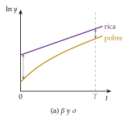
Fuente: elaboración propia. Primer paso del gráfico 8.
(b) ni \(\beta\) ni \(\sigma\) (gráfico 7): la pobre crece menos que la rica, y la distancia aumenta;
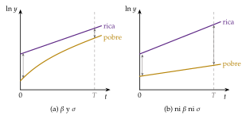
Fuente: elaboración propia. Segundo paso del gráfico 8.
(c) \(\beta\) sin \(\sigma\) (gráfico 8): la pobre crece más que la rica, pero tanto que la adelanta, y al final la supera por más de lo que la rica la superaba al principio: hay convergencia \(\beta\) y la dispersión aumenta.
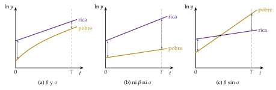
Fuente: elaboración propia.
Con muchas economías, la \(\beta\) tampoco garantiza la \(\sigma\) por las perturbaciones: aunque los pobres tiendan a crecer más, los choques separan de nuevo las rentas, y la dispersión puede subir.
¿Cuál usar?: el caso (c) es raro, porque exige que un país adelante a otro por un margen considerable, y casi siempre los 2 conceptos apuntan en la misma dirección. Pero los 2 interesan: la \(\sigma\) responde a si las rentas se acercan con el tiempo; la \(\beta\), a la rapidez con la que el país pobre medio se convierte en rico y a por qué.
Por qué la \(\beta\) no garantiza la \(\sigma\): las perturbaciones. Si \(\ln y_{i,t}=a+(1-b)\ln y_{i,t-1}+u_{i,t}\), con \(0<b<1\) (convergencia \(\beta\)) y perturbaciones independientes de varianza \(\sigma_u^2\), la dispersión evoluciona según \[\sigma_{y,t}^2=(1-b)^2\,\sigma_{y,t-1}^2+\sigma_u^2\;\longrightarrow\;\sigma_y^{*2}=\frac{\sigma_u^2}{1-(1-b)^2},\tag{11}\] y solo cae si parte de un valor mayor que \(\sigma_y^{*}\): con convergencia \(\beta\), la dispersión puede subir. \(a\) y \(b\) son parámetros locales de esta caja. La ecuación sale de tomar varianzas en la anterior, con \(u_{i,t}\) independiente de la renta pasada; el punto fijo es estable porque \((1-b)^2<1\).
Clubes de convergencia: no es lo mismo que la condicional
La diferencia: en la convergencia condicional, 2 economías van a estados estacionarios distintos porque tienen parámetros distintos (ahorran o estudian distinto, su población crece a otro ritmo); si los parámetros fueran iguales, convergerían. Hay clubes de convergencia cuando 2 economías con los mismos parámetros van a estados estacionarios distintos según su punto de partida: convergen las que empiezan cerca, pero no las demás.
Por qué: ocurre cuando el modelo tiene equilibrios múltiples, como en las trampas de pobreza: por debajo de un umbral de capital o de capital humano, la economía cae al equilibrio bajo; por encima, sube al alto [ver tema 3.A.43] [ver tema 3.B.28]. Controlar por \(\vec{z}_{t-1}\), como en la condicional, no basta para que converjan: lo que las separa es la historia, no los parámetros.
Por qué cuesta distinguirlas: si la renta inicial está correlacionada con los parámetros, los datos de una convergencia condicional y los de unos clubes se parecen mucho, y las regresiones de convergencia no los separan bien.
Otras nociones
La convergencia en series temporales pide que la diferencia de renta entre 2 economías no tenga una tendencia persistente: que los choques que las separan sean transitorios.
La falacia de Galton: que los que empiezan arriba crezcan menos puede ser solo regresión a la media, sin que la distribución se estreche. Por eso D. Quah (1993) pide estudiar la dinámica de toda la distribución y no un coeficiente.
Las teorías del crecimiento y la convergencia. Lo que predice cada modelo, con los nombres del tema de crecimiento endógeno [ver tema 3.A.44].
| Modelo | Fundamentos | Predicción |
|---|---|---|
| Crecimiento exógeno [ver tema 3.A.43] | ||
| Neoclásico (Solow; Mankiw, Romer y Weil) | Rendimientos decrecientes del capital; progreso técnico exógeno | Convergencia condicional (\(\beta\)), y \(\sigma\) entre economías parecidas |
| Equilibrios múltiples (trampas de pobreza) | Umbrales de capital o de capital humano | Clubes de convergencia |
| Crecimiento endógeno de 1.ª generación: acumulación de capital [ver tema 3.A.44] | ||
| \(AK\) (Rebelo, 1991) | Capital amplio con rendimientos constantes | Ninguna: diferencias permanentes de crecimiento |
| Gasto público productivo (Barro, 1990) | \(AK\) con el gasto público como factor | Ninguna |
| Externalidades (Arrow, 1962; Romer, 1986) | Aprendizaje por la práctica y desbordamientos | Ninguna si los rendimientos sociales son constantes |
| Uzawa (1965) y Lucas (1988) | Acumulación de capital humano | Ninguna en niveles; transición en la relación entre capital físico y humano |
| Sobelow (Jones y Manuelli, 1990) | Producto marginal del capital que cae sin llegar a cero | Condicional, en tasas de crecimiento |
| Crecimiento endógeno de 2.ª generación: innovación [ver tema 3.A.44] | ||
| Variedades (Romer, 1990) | I+D que crea nuevas variedades; ideas no rivales | Ninguna |
| Calidades (Aghion y Howitt, 1992) | I+D que mejora la calidad; destrucción creadora | Ninguna |
| Crecimiento semiendógeno [ver tema 3.A.44] | ||
| Jones (1995) | Ideas con rendimientos decrecientes; sin efecto escala | Condicional |
| Geografía | ||
| Nueva geografía económica (Krugman) | Rendimientos crecientes; fuerzas de aglomeración (centrípetas) y de dispersión (centrífugas) | Posible divergencia: centro y periferia |
Fuente: elaboración propia a partir de Río Casasola (2018) y de los artículos de cada modelo.
II.2. Evidencia empírica sobre la convergencia
Los primeros resultados: no hay convergencia absoluta
Por qué en los 80: por los datos, las series históricas de Maddison y los de Summers y Heston (1988), que dan la renta real, en paridad de poder adquisitivo, de 130 países desde 1950; y por la teoría, porque la convergencia separaba a los modelos neoclásicos de los endógenos.
Baumol (1986) encuentra una convergencia fuerte entre 16 países industrializados entre 1870 y 1979. De Long (1988) muestra que es un sesgo de selección: la muestra solo incluye a los que ya eran ricos en 1979. Si se toman los que eran ricos en 1870, entre ellos España, Argentina o Portugal, la convergencia desaparece.
Con la muestra amplia, la renta inicial no predice el crecimiento: entre 1960 y 1985, en 98 países, el coeficiente es incluso positivo, aunque no significativo, y la dispersión aumenta. A muy largo plazo, el cociente entre la renta por habitante de los países más ricos y la de los más pobres pasó de 8,7 en 1870 a 45 en 1990: una «divergencia a lo grande».
Con datos actuales: entre 1960 y 2000, la nube de todos los países no petroleros no tiene pendiente negativa; su recta incluso sube: divergencia (gráfico 9, panel a). Volvamos a nuestros 2 países: en 1960 estaban en la misma zona de la nube; Corea del Sur subió muy por encima de la recta y Nigeria quedó por debajo.
Lectura de la época: los pobres no crecen más que los ricos. Se tomó como evidencia en contra del modelo neoclásico y a favor de los modelos de crecimiento endógeno, en los que los rendimientos no decrecientes del capital impiden la convergencia [ver tema 3.A.44]; el aparente fracaso del modelo neoclásico explica buena parte del éxito de esos modelos en los 80 y los 90.
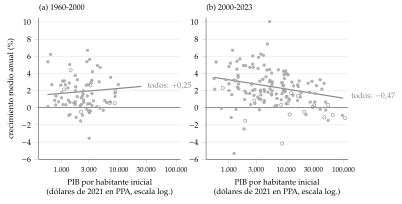
La contrarrevolución neoclásica de los 90: la convergencia condicional
La respuesta neoclásica: el modelo de Solow no predice que todos los países converjan, sino que cada uno converge a su estado estacionario, que depende de su ahorro, de su crecimiento de la población, de su tecnología y de su depreciación. Si los países tienen parámetros distintos, la evidencia anterior no sirve contra el modelo: hay que contrastar la convergencia condicional, de 2 formas:
añadir los determinantes del estado estacionario a la regresión, el vector \(\vec{z}_{t-1}\) de (9): con la tasa de inversión y el crecimiento de la población, el coeficiente de la renta de 1960 sobre el crecimiento acumulado en 25 años pasa a ser negativo y significativo en los 98 países (\(-0{,}14\)); al añadir la escolarización, \(-0{,}29\), una velocidad del 1,4 % anual;
estudiar economías parecidas, que se puede pensar que tienen estados estacionarios parecidos: entre los 22 países de la OCDE, basta la renta inicial: \(-0{,}34\); con los controles, mejora el ajuste pero la cifra apenas cambia, y la velocidad llega al 2 % anual.
Con datos actuales, la OCDE se ve en el gráfico 10: entre 1960 y 2000, la recta de los 30 países de la OCDE con datos desde 1960 es claramente negativa, con una velocidad de convergencia de en torno al 1,3 % anual, mientras la de todos sube.
Por qué cambia el signo: en la muestra amplia, los países pobres ahorran menos y su población crece más deprisa. Al omitir el ahorro y la población, correlacionados con la renta inicial, el coeficiente de la renta inicial recoge su efecto y se sesga al alza: es un sesgo de variable omitida (anexo B).
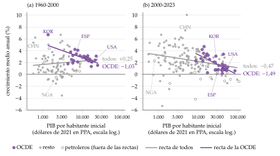
Fuente: elaboración propia a partir de Groningen Growth and Development Centre (2025) (Penn World Table 11.0; PIB por habitante en paridad de poder adquisitivo, dólares de 2021; sin exportadores de petróleo).
La convergencia entre regiones
Las regiones de un mismo país comparten instituciones, leyes, impuestos, tecnología y preferencias: son el mejor candidato a la convergencia absoluta.
Barro y Sala-i-Martin (1991, 1992) la encuentran en los estados de Estados Unidos, las prefecturas de Japón y las regiones europeas, con una velocidad muy parecida en todos, de en torno al 2 % anual: la mitad de la distancia tarda unos 35 años en cerrarse. Es la mitad del 4 % que predice el modelo de Solow con un capital de 1/3, y lo que predice con un capital amplio de 2/3 [ver tema 3.A.43]. Como dice el refrán, «no se ganó Zamora en una hora».
Para la Unión Europea y las regiones españolas, [ver tema 3.B.40] [ver tema 4.A.17] [ver tema 4.A.30].
Los estados de Estados Unidos. Con la renta personal por habitante de los 48 estados continentales desde 1840 y el producto bruto estatal desde 1963 (comparar regiones de un mismo país controla por muchos factores no observables, como las instituciones), estiman la ecuación de la transición del modelo neoclásico, \[\frac{1}{T}\ln\frac{y_{i,T}}{y_{i,0}}=g+\frac{1-e^{-\lambda T}}{T}\,\ln\frac{\tilde y^*}{\tilde y_{i,0}},\qquad \beta_1=-\frac{1-e^{-\lambda T}}{T},\tag{12}\] con \(\tilde y\) por unidad de trabajo eficiente y \(\tilde y^*\) la del estado estacionario, que relaciona el crecimiento medio con la distancia al estado estacionario; \(\lambda\), que depende de los parámetros del modelo, gobierna la velocidad de convergencia. Obtienen \(\lambda\simeq0{,}02\): los estados pobres crecen más, pero mucho más despacio de lo que predice el modelo con una participación del capital de 1/3. Para reproducir esa velocidad, la participación del capital en sentido amplio tendría que rondar 0,7-0,8, lo que solo es razonable si incluye el capital humano. Conclusión: hay convergencia, pero los rendimientos decrecientes llegan muy despacio. Con datos de 1929 a 2025, la convergencia sigue (gráfico 11): la velocidad es del 1,4 % anual y la renta de 1929 explica el 88 % de las diferencias de crecimiento entre estados.
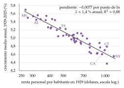
Fuente: elaboración propia a partir de U.S. Bureau of Economic Analysis (2026) (cuentas regionales, SAINC1).
La \(\sigma\): la OCDE, la Unión Europea y el mundo
En el mundo, la dispersión del logaritmo de la renta por habitante entre 96 países sube de 0,96 en 1960 a 1,34 en 2000-2007 y apenas baja después, a 1,27 en 2023: no hay convergencia \(\sigma\) (gráfico 12).
En la OCDE, baja de 0,61 a 0,44; en la UE-27, de 0,55 en 1995-2000 a 0,33 en 2023, con la convergencia de los países del este. Entre los 14 miembros anteriores a 2004 (sin el Reino Unido), sin Irlanda ni Luxemburgo, baja de 0,38 en 1960 a 0,15 en 2007 y vuelve a subir, a 0,20 en 2023, con la crisis del euro en el sur.
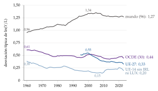
Fuente: elaboración propia a partir de Groningen Growth and Development Centre (2025) (Penn World Table 11.0): 96 países sin exportadores de petróleo, 30 de la OCDE con datos desde 1960, la UE-27 desde 1995 y la UE-14 sin Irlanda ni Luxemburgo.
Clubes de convergencia y trampas de pobreza
Picos gemelos: la distribución mundial de la renta por habitante ha evolucionado hacia 2 modas, un club de ricos y otro de pobres, con poca movilidad entre ellos. Los países con condiciones iniciales parecidas (renta, alfabetización) siguen leyes de crecimiento distintas y convergen dentro de su grupo: es lo que se esperaría de unos clubes, y no solo de parámetros distintos. Como dice el refrán, «Dios los cría y ellos se juntan».
El balance: tras medio siglo de datos, los países en desarrollo, como grupo, no han cerrado la brecha con los avanzados; sí ha caído la desigualdad mundial entre personas desde 2000, por el crecimiento de China y la India.
¿Convergencia desde 2000?
Kremer, Willis y You (2022) repiten las pruebas de los 90 con un cuarto de siglo más de datos: desde 1990 hay una tendencia a la convergencia absoluta, y desde 2000 es más clara, porque los rezagados crecen más y la frontera, más despacio. A la vez, han convergido muchos de los determinantes del crecimiento (capital humano, políticas, instituciones), y la convergencia absoluta se ha acercado a la condicional.
Patel, Sandefur y Subramanian (2021) llegan a lo mismo con varias bases de datos: una convergencia lenta desde mediados de los 90, sobre todo porque los países en desarrollo crecen más.
Acemoglu y Molina (2022) discrepan: sin efectos fijos de país, los coeficientes de convergencia están sesgados, y el sesgo puede cambiar en el tiempo aunque los parámetros no cambien. Con efectos fijos, no ven cambios importantes en la convergencia.
Con datos actuales: entre 2000 y 2023, la pendiente es negativa y significativa en la muestra amplia (\(-0{,}52\) con 182 países; \(-0{,}47\) con 165, sin petroleros, como en el panel b de los gráficos 9 y 10; \(-0{,}34\) sin petroleros ni países pequeños), pero la velocidad es de apenas un 0,5 % anual; en la OCDE, del 1,8 %. Con los datos de Maddison es casi nula: la convergencia reciente es frágil.
En la industria: la productividad del trabajo en las manufacturas converge de forma incondicional; si no se ve en el conjunto de la economía es porque en los países pobres la industria pesa poco.
Recapitulación y nexo: no hubo convergencia absoluta en el mundo en la segunda mitad del siglo XX; sí condicional y entre economías parecidas, en torno al 2 % anual, y desde 2000 asoma una convergencia absoluta lenta y discutida. Si la convergencia es condicional, la pregunta es: ¿condicional a qué? Es lo que buscan las regresiones de crecimiento.
III. Factores que influyen sobre el crecimiento
Conclusión anticipada: las regresiones de crecimiento encuentran que crecen más los países con más capital humano e inversión y menos consumo público, inestabilidad y distorsiones, pero pocas variables resisten las pruebas de robustez. Detrás de quién acumula e innova y quién no están, en último término, las instituciones.
La idea: hasta aquí, las causas del crecimiento que señala la teoría [ver tema 3.A.43] [ver tema 3.A.44], el capital físico, el capital humano y la tecnología, son causas próximas: describen cómo crece una economía, pero no por qué unas acumulan e innovan y otras no. Si estos factores son tan importantes, ¿por qué ciertas sociedades no mejoran su tecnología, invierten más y acumulan más capital humano? Responder lleva a las causas últimas.
El método: la regresión de convergencia condicional (9) se puede usar al revés: dada la renta inicial, ¿qué variables de \(\vec{z}_{t-1}\) se asocian a crecer más? Las regresiones empiezan por las causas próximas y acaban tropezando con las últimas.
III.1. El análisis de Barro (1991)
La especificación
Barro (1991) hace el estudio seminal de los determinantes empíricos del crecimiento, y desde entonces se ha sucedido una literatura abundante con la misma forma. La regresión es la de la convergencia condicional: \[\gamma^{y}_{t,t-1}=\beta_0+\beta_1\ln y_{t-1}+\vec{\eta}\cdot\vec{x}_{t-1}+u_t ,\]
la variable dependiente es la tasa de crecimiento de la renta por habitante;
a la derecha, la renta inicial, que aísla el efecto de la convergencia, y un vector \(\vec{x}_{t-1}\) de otras variables que pueden influir en el crecimiento;
cuantas más variables, mejor ajuste (mayor \(R^2\) ajustado), pero también más riesgo de una regresión demasiado compleja: hay que buscar un equilibrio, y las más ambiciosas han llegado a incluir hasta 50 variables.
Barro estima la regresión con 98 países entre 1960 y 1985, añadiendo variables paso a paso.
Los resultados, regresión a regresión
1.ª, solo con la renta inicial (\(\vec{\eta}=\vec{0}\)): como en el resto de la literatura, no hay convergencia absoluta.
2.ª, con el capital humano inicial (la matrícula en primaria y secundaria de 1960): el coeficiente de la renta inicial se vuelve negativo y significativo, convergencia condicional, y el capital humano inicial se asocia a más crecimiento, menor fecundidad y más inversión.
3.ª, con las variables de política y de entorno: \[\gamma^{y}=\beta_0+\beta_1\ln y_{1960}+\beta_2\,\text{Escol}_{1960}+\beta_3\,\text{ConsPúb}+\beta_4\,\text{Inest}+\beta_5\,\text{Dist}+u ,\]
\(\beta_3<0\): el consumo público sobre el PIB (sin educación ni defensa), las partidas que no elevan la productividad y que distorsionan las decisiones privadas con los impuestos que exigen, reduce el crecimiento; la inversión pública no tiene un efecto significativo;
\(\beta_4<0\): la inestabilidad política (revoluciones, golpes de Estado y asesinatos políticos), que refleja la importancia de la ley y el orden;
\(\beta_5<0\): las distorsiones de los mercados, medidas por la desviación del precio de los bienes de inversión respecto a la paridad de poder adquisitivo.
4.ª, con variables ficticias de África subsahariana y América Latina: son negativas y significativas, y el ajuste mejora: las 2 regiones crecen menos de lo que predicen sus variables, señal de que falta algo en la regresión.
Ampliaciones: en trabajos posteriores, Barro (1995) encuentra que la inflación reduce el crecimiento, sobre todo cuando es alta19, y Barro (1997) añade el imperio de la ley, la relación real de intercambio, la fecundidad y la esperanza de vida.
Las variables del modelo de Solow: con solo la tasa de inversión, el crecimiento de la población y la escolarización, como en las regresiones de MRW (apartado II.2), ya aparece la convergencia condicional. La cuestión es si lo que se añade después es robusto.
Volvamos a Corea del Sur y Nigeria: Corea del Sur escolarizó a su población y sostuvo una inversión muy alta y estable; en 2023 su índice de capital humano casi duplica el de Nigeria (3,9 frente a 2,1). ¿Por qué Nigeria no hizo lo mismo, si le convenía? Las regresiones no lo responden.
III.2. Otros determinantes y robustez
Otros determinantes
La inversión: la tasa de inversión es la variable más robusta (lo veremos enseguida), aunque su causalidad es de ida y vuelta: crecer también hace invertir. En los milagros del este de Asia, el crecimiento sostenido de más del 5 % fue de la mano de tasas de inversión muy altas.
El desarrollo financiero: los países con sistemas financieros más profundos crecen más, y el desarrollo financiero inicial predice el crecimiento posterior.
El comercio: el comercio y el crecimiento van juntos, pero la causalidad va en los 2 sentidos. Frankel y Romer (1999) usan la geografía (el tamaño y la distancia de los socios) como instrumento del comercio: un punto más de comercio sobre el PIB eleva la renta por habitante entre medio y 2 puntos [ver tema 3.B.9].
La geografía, la salud y la demografía: los países sin salida al mar y los tropicales crecen menos; la esperanza de vida se asocia a más crecimiento, y la fecundidad, a menos.
La democracia y el resto de las instituciones se estudian con las causas últimas (apartado III.3).
¿Son robustos? Levine y Renelt (1992)
El problema: tras Barro, más de 50 variables aparecían significativas en alguna regresión, y la teoría no dice cuáles incluir.
La propuesta: no suponer de antemano cuáles son los determinantes del crecimiento, sino comprobar cuáles no dependen de la especificación. Levine y Renelt (1992) aplican el análisis de cotas extremas de Leamer (1983) a regresiones de sección cruzada de la forma \[\gamma^{y}_i=\beta_0+\vec{\beta}_I\cdot\vec{I}_i+\beta_M\,M_i+\vec{\beta}_Z\cdot\vec{Z}_i+u_i ,\]
\(\vec{I}\) son las variables que entran siempre (la renta inicial, la inversión, la escolarización y el crecimiento de la población);
\(M\), la variable cuya robustez se prueba;
\(\vec{Z}\), combinaciones de otras variables de control que se van cambiando.
El criterio: se estiman todas las regresiones posibles; si el coeficiente \(\beta_M\) conserva el signo y la significación en todas, la variable es un determinante claro del crecimiento (pasa a ser de las \(\vec{I}\)); si cambia de signo o deja de ser significativo en alguna, no es robusta.
El resultado: casi ninguna lo es: solo la tasa de inversión, y el comercio, que se asocia a más inversión.
Sala-i-Martín (1997): robustez en probabilidad
Sala-i-Martin (1997) considera la prueba demasiado exigente, porque basta una regresión desfavorable para descartar una variable y casi ninguna la supera. Propone pensar en probabilidades: no llamar robustas solo a las que lo son en el 100 % de las regresiones, sino decir en qué grado lo es cada una, mirando toda la distribución de los coeficientes en millones de regresiones. Así, una parte considerable de las variables resulta robusta.
Sala-i-Martin, Doppelhofer y Miller (2004) lo formalizan con promedios bayesianos de modelos: 18 de 67 variables son robustas; entre las más robustas, la ficticia de Asia oriental, la escolarización primaria, el precio relativo de la inversión y la renta inicial.
Otros problemas: muchas variables están muy correlacionadas entre sí (multicolinealidad), lo que hace difícil separar el efecto de cada una, y casi todas son endógenas; con datos de panel en medias quinquenales se suavizan los ciclos y se recogen los efectos de medio plazo, pero no se resuelve la causalidad (anexo B).
El gasto público y los impuestos (Kneller, Bleaney y Gemmell, 1999)
La aportación: dividir el gasto público en productivo e improductivo y los impuestos en distorsionantes y no distorsionantes, y tener en cuenta entera la restricción presupuestaria del Estado, porque cada gasto se financia con algún impuesto. Con esa especificación, los resultados cambian mucho.
El resultado, para la OCDE: los impuestos distorsionantes reducen el crecimiento, y el gasto productivo lo aumenta, mientras que el improductivo no lo afecta.
La cautela: la causalidad inversa: crecer también cambia el gasto y los impuestos, y los gobiernos hacen políticas expansivas cuando la economía se frena [ver tema 3.A.38].
Recapitulación y nexo: las regresiones dicen qué acompaña al crecimiento, no por qué unos países invierten, estudian e innovan y otros no. Para eso hay que bajar a las causas últimas.
III.3. La importancia de las instituciones
El marco: 4 causas últimas
Corea del Sur y Singapur crecieron muy deprisa desde los 60 porque invirtieron mucho y mejoraron su tecnología; Nigeria no. La pregunta de fondo es por qué no lo hizo, si le habría convenido.
Las causas últimas son las que explican esas decisiones:
la suerte o los equilibrios múltiples, que llevan a sociedades parecidas por caminos distintos;
la geografía: el clima, las enfermedades, los recursos o el acceso al mar;
la cultura: los valores y las creencias, como la confianza o la actitud ante el trabajo y el ahorro;
las instituciones: las reglas económicas y políticas que fijan los incentivos a invertir, innovar y comerciar.
Lo difícil no es encontrar correlaciones, sino la causalidad: los países ricos tienen mejores instituciones, más confianza y mejor salud, pero ¿es porque son ricos? (gráfico 14).
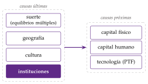
Paso 1 (gráfico 13): las 4 causas últimas determinan cuánto se acumula de capital físico y humano y cuánta tecnología se adopta, las causas próximas.
Paso 2 (gráfico 14): las causas próximas determinan la renta por habitante, \(y\); pero la renta también mejora las instituciones (la flecha de vuelta, la causalidad inversa), y por eso una correlación entre instituciones y renta no prueba que las instituciones la causen.
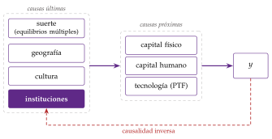
Fuente: elaboración propia a partir de Acemoglu (2009, caps. 1 y 4).
La suerte
Con equilibrios múltiples, pequeñas diferencias iniciales o simples expectativas llevan a sociedades parecidas a equilibrios distintos: el gran empujón que solo llega si muchos sectores se industrializan a la vez, o los umbrales de capital humano por debajo de los cuales no compensa acumular. Son las trampas de pobreza [ver tema 3.A.43] [ver tema 3.B.28].
Límite: explica que haya clubes, pero no por qué unos países salen de la trampa y otros no; para eso hacen falta otras causas.
La geografía
La hipótesis: los países tropicales son más pobres por el clima, las enfermedades (la malaria) y una agricultura menos productiva, y los que no tienen salida al mar, por los costes de transporte. A muy largo plazo, la geografía decidió qué sociedades tuvieron agricultura, animales domésticos y, con ellos, ventaja.
La evidencia en contra: entre las antiguas colonias, las más prósperas en 1500 (las más urbanizadas y densamente pobladas) son hoy las más pobres. La geografía no cambió; cambiaron las instituciones que impusieron los colonizadores: es la «inversión de la fortuna». Singapur, en el ecuador, es uno de los países más ricos del mundo, y Nogales tiene una sola geografía y 2 niveles de vida.
La cultura
La hipótesis: desde Weber (1905), que vinculó la ética protestante al espíritu del capitalismo, la cultura se ve como una causa del desarrollo: la confianza, el respeto a los demás o la creencia en que el esfuerzo se recompensa facilitan los intercambios y la inversión.
La evidencia: en las regiones europeas, los rasgos culturales que proceden de la historia política y de la alfabetización de hace más de un siglo explican parte de las diferencias de desarrollo actuales. Pero la cultura cambia, y en parte es el resultado de las propias instituciones.
Las instituciones
Las instituciones son «las reglas del juego en una sociedad», las restricciones que los hombres se dan para ordenar sus relaciones20: la protección de la propiedad, el cumplimiento de los contratos, los límites al poder de los gobernantes, la facilidad para crear empresas.
Con derechos de propiedad bien definidos y costes de transacción bajos, los agentes llegan por sí mismos a acuerdos que benefician a todos; y un orden de reglas generales permite coordinar un conocimiento que nadie tiene entero. En palabras de Hayek (1988, 76), «la curiosa tarea de la economía es demostrar a los hombres lo poco que saben realmente sobre lo que imaginan que pueden diseñar» (traducción propia).
Contexto: los resultados decepcionantes del Consenso de Washington21 llevaron al Banco Mundial a defender ya en 1998 que había que completarlo con reformas institucionales. Hall y Jones (1999) atribuyeron las diferencias de productividad a la infraestructura social (apartado I.4), y Acemoglu, Johnson y Robinson buscaron demostrar la causalidad.
III.3.1. La estimación de Acemoglu, Johnson y Robinson (2001)
a) Idea
Los países ricos tienen mejores instituciones, pero puede ser porque son ricos (causalidad inversa) o porque algo omitido causa las 2 cosas. Para saber si las instituciones causan la renta hace falta una fuente de variación de las instituciones que no afecte a la renta por otra vía: un instrumento (anexo B). Acemoglu, Johnson y Robinson (2001a) lo encuentran en la historia colonial.
b) Modelo: la estrategia empírica
i) Supuestos: la historia que da el instrumento
La cadena tiene 3 eslabones:
donde los colonos europeos morían mucho (malaria, fiebre amarilla), no se asentaron y montaron instituciones extractivas, pensadas para sacar recursos; donde sobrevivían (Estados Unidos, Canadá, Australia, Nueva Zelanda), se asentaron y crearon instituciones que protegían la propiedad y limitaban el poder;
esas instituciones tempranas han persistido tras la independencia;
y las instituciones actuales determinan la renta actual.
El supuesto clave, la exclusión: la mortalidad de los colonos de hace 2 o 3 siglos solo afecta a la renta actual a través de las instituciones. Como dice el refrán, «árbol que nace torcido, jamás su tronco endereza».
ii) Desarrollo: la estimación en 2 etapas
El instrumento está correlacionado con las instituciones y con el nivel de la renta, no con su crecimiento: en 64 antiguas colonias, la mortalidad de los colonos explica una parte importante de la protección media frente a la expropiación en 1985-1995 (primera etapa), y la renta por habitante de 1995 se estima con esa parte de las instituciones (segunda etapa).
Las 2 etapas. Con \(R_i\) la protección frente a la expropiación del país \(i\) (un índice de 0 a 10) y \(M_i\) la mortalidad de los colonos, \[\text{1.ª: } R_i=\zeta+\beta_1\ln M_i+v_i;\qquad \text{2.ª: } \ln\left(\frac{Y}{L}\right)_i=\mu+\beta_2\,\hat R_i+\varepsilon_i ,\tag{13}\] donde \(\hat R_i\) es la protección que predice la primera etapa22. Las 2 etapas pueden llevar más controles (latitud, continente, origen colonial, religión). Con los datos de los autores: primera etapa, \(\hat\beta_1=-0{,}61\); segunda, \(\hat\beta_2=0{,}94\); la relación directa entre la renta de 1995 y la mortalidad tiene una pendiente de \(-0{,}57\) y un \(R^2\) de 0,48.
iii) Implicaciones
El efecto estimado con variables instrumentales (0,94) es mayor que el de mínimos cuadrados (0,52): las instituciones importan más de lo que dice la correlación, y la diferencia apunta a errores de medida en el índice de instituciones.
Llevar las instituciones de Nigeria al nivel de las de Chile multiplicaría a largo plazo su renta por 7 (Chile era 11 veces más rico). Volvamos a nuestro ejemplo: en los datos de los autores, la mortalidad de los colonos en Nigeria era de las más altas de la muestra, y su protección frente a la expropiación, de 5,5 sobre 10, frente a 7,8 en Chile y 10 en Estados Unidos.
Controlando por las instituciones, la latitud, el clima y la religión dejan de ser significativos: la geografía actúa a través de las instituciones.
c) Evidencia empírica
La relación sigue en pie con datos de 2023: la pendiente entre el logaritmo de la renta por habitante y el de la mortalidad de los colonos es de \(-0{,}61\), con una correlación de \(-0{,}73\) (62 países, sin Venezuela, cuyo dato de 2023 marca la PWT como atípico; gráfico 15).
Las 2 Coreas: un mismo pueblo, una misma geografía y una misma cultura, separados en 1945 por una frontera que les dio instituciones opuestas, con resultados opuestos. Es Nogales a escala de un país, y el matiz del refrán: el árbol sí se endereza cuando cambian las reglas, como en Corea del Sur.
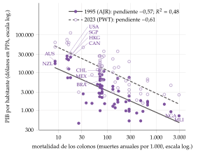
d) Valoración
Aportación: convirtió la idea de que «las instituciones importan» en una relación causal estimada y abrió la literatura de los experimentos naturales de la historia. Fue una de las razones del Premio Nobel de 2024.
Críticas:
los datos de mortalidad: 36 de los 64 países tienen la de otros países, y se mezclan poblaciones distintas (soldados, obreros, obispos); los autores responden que los resultados se mantienen;
la exclusión: los colonos no solo llevaron instituciones, sino también su capital humano, que podría ser lo que importa;
la mortalidad pasada podría afectar a la renta actual por la salud de hoy.
III.3.2. ¿Qué pesa más, y por qué hay instituciones malas?
Las instituciones mandan: Rodrik, Subramanian y Trebbi (2004) estiman a la vez el efecto de las instituciones, la geografía y el comercio, cada uno con su instrumento. La calidad de las instituciones lo domina todo; la geografía actúa sobre todo a través de ellas, y el comercio, controladas las instituciones, no tiene un efecto directo significativo, aunque mejora las instituciones. Sachs (2003) replica que la malaria tiene un efecto directo sobre la renta que no pasa por las instituciones. El consenso actual es que las instituciones son la causa principal, sin que la geografía sea irrelevante.
Las instituciones políticas: la democracia también hace crecer. Una democratización permanente eleva el PIB por habitante en torno a un 20 % en los 25 años siguientes, a través de más inversión, más escolarización, reformas económicas, más provisión de bienes públicos y menos conflicto social23.
¿Por qué no las adoptan todos? Si las buenas instituciones hacen crecer, ¿por qué persisten las malas? Acemoglu, Johnson y Robinson (2005) distinguen 4 visiones:
las instituciones eficientes (un «teorema de Coase político»): las sociedades eligen las instituciones que maximizan el excedente y luego lo reparten; no explica por qué persisten las malas;
la ideológica: las sociedades eligen instituciones distintas porque creen cosas distintas sobre lo que funciona; por ejemplo, creencias distintas sobre si el esfuerzo se recompensa pueden perpetuarse y sostener políticas redistributivas distintas;
la incidental: las instituciones son el subproducto de otras decisiones, no se eligen por sus efectos económicos;
la del conflicto social, la que defienden: las instituciones benefician a unos grupos y perjudican a otros, y se imponen las que convienen a quien tiene el poder político, aunque reduzcan el excedente total. Las élites no reforman porque perderían su poder.
Un modelo del conflicto: en Benhabib y Rustichini (1996), los grupos sociales pueden apropiarse de parte de lo que producen los demás, y la cooperación se sostiene con la amenaza de castigo, como en un dilema del prisionero repetido. Cuando la riqueza es baja, la tentación de apropiarse pesa más que lo que se pierde, la presión redistributiva desanima la acumulación y la economía puede estancarse: otra forma de trampa de pobreza. Su papel en la política de desarrollo se estudia aparte [ver tema 3.B.28].
Recapitulación: las causas próximas explican cómo se crece; las últimas, sobre todo las instituciones, por qué. Es la respuesta de los datos a la pregunta de Nogales.
Conclusión
Recapitulación:
En conclusión,
el modelo neoclásico reproduce casi todos los hechos de Kaldor, y la contabilidad del crecimiento muestra que acumular factores explica buena parte del crecimiento en el tiempo, pero la productividad explica la mayor parte de las diferencias de renta entre países; la PTF, un residuo, se ha frenado en las economías avanzadas, y la participación del trabajo, que pondera a los factores, ha caído desde los 80, sobre todo en Estados Unidos;
no hubo convergencia absoluta en el mundo durante el siglo XX, sí condicional y lenta, de en torno al 2 % anual, y desde 2000 asoma una más amplia;
las regresiones de crecimiento señalan el capital humano y la inversión, pero pocas variables son robustas; detrás de quién acumula, innova y converge están, en último término, las instituciones.
Relevancia:
Si el problema es la productividad, la agenda de política económica es la de la competencia, la buena asignación del capital, la innovación y la calidad de las instituciones, más que la de acumular por acumular.
Es el diagnóstico del informe Draghi sobre la brecha de productividad de Europa con Estados Unidos, y el de una España cuya PTF apenas ha crecido desde mediados de los 90.
Extensiones:
Los modelos que se contrastan aquí [ver tema 3.A.43] [ver tema 3.A.44]; la convergencia en la Unión Europea y entre las regiones españolas [ver tema 3.B.40] [ver tema 4.A.17]; la contabilidad del crecimiento de la economía española [ver tema 4.A.27]; el comercio y el crecimiento [ver tema 3.B.9]; la política fiscal y el crecimiento [ver tema 3.A.38]; la desigualdad personal [ver tema 3.A.24] [ver tema 4.A.3], y las instituciones en la política de desarrollo [ver tema 3.B.28].
Opinión:
La evidencia no ha elegido un modelo, pero ha ido estrechando la pregunta: de «cuánto capital» a «cuánta productividad», y de ahí a «qué instituciones».
Las respuestas son más modestas que las preguntas, pero apuntan en la misma dirección.
Y el futuro no está escrito: parte del crecimiento del último siglo descansó en impulsos que se agotan, como el aumento de la escolarización y del número de investigadores.
Idea final:
Volvamos a Nogales.
La misma tierra y la misma gente dan frutos distintos según las reglas del juego bajo las que viven.
A la pregunta del principio, por qué unos países son más ricos que otros, los datos responden que no tanto por su geografía o su suerte como por lo que hacen con lo que tienen, y eso depende de sus instituciones.
A las economías, como a los árboles, se las conoce por sus frutos.
A. Anexo: la distribución de la renta entre los factores
a) Idea
La pregunta: ¿qué parte de la renta va al trabajo y qué parte al capital, y por qué cambia? Es la vieja pregunta de Ricardo sobre las leyes que regulan el reparto del producto, y hoy un debate central por la caída de la participación del trabajo.
Por qué importa aquí: las participaciones son el quinto hecho de Kaldor y, además, las ponderaciones de la contabilidad del crecimiento (bloque I): si cambian, cambia la medida de la PTF. Este anexo amplía lo que el apartado I.6 resume.
b) Modelo: la teoría neoclásica del reparto
i) Supuestos
Una función de producción agregada \(Y=F(K,AL)\) con rendimientos constantes a escala.
Mercados de factores competitivos, en los que cada factor cobra su producto marginal: \(r=F_K\) y \(w=F_L\), con el precio del producto igual a 1.
ii) Desarrollo
El teorema de Euler para funciones homogéneas de grado 1 [ver tema 3.A.11] garantiza que, pagando así a los factores, el producto se agota: \[Y=r\,K+w\,L\qquad\Longrightarrow\qquad \alpha\equiv\frac{r\,K}{Y},\qquad 1-\alpha\equiv\frac{w\,L}{Y},\tag{14}\] donde \(r\) es el coste de uso del capital; con el precio del capital constante, es el tipo de interés real más la depreciación.
Con una Cobb-Douglas, \(Y=K^{\alpha}(AL)^{1-\alpha}\), el exponente \(\alpha\) es la participación del capital y no cambia nunca, pase lo que pase con \(K/Y\) o con la tecnología: la elasticidad de sustitución es 1, y lo que el capital gana en cantidad lo pierde en precio.
Con una CES, \(Y=\left[a_K\,K^{\rho}+a_L\,(AL)^{\rho}\right]^{1/\rho}\) con \(\rho\equiv(\sigma-1)/\sigma\) [ver tema 3.A.11], la participación del capital es \[\alpha_t=\frac{F_K\,K_t}{Y_t}=a_K\left(\frac{K_t}{Y_t}\right)^{\rho},\tag{15}\] y sube con \(K/Y\) si \(\sigma>1\) (el capital sustituye con facilidad al trabajo) y baja si \(\sigma<1\)24.
iii) Implicaciones
Participaciones estables (el quinto hecho): las da la Cobb-Douglas, o cualquier tecnología si \(K/Y\) no cambia.
Una caída duradera de la participación del trabajo exige salir de ese marco por alguno de estos caminos:
una elasticidad de sustitución distinta de 1, con un capital que se abarata o se acumula;
un progreso técnico sesgado, que ahorre trabajo (la automatización);
salir de la competencia perfecta: con márgenes, una parte de la renta no remunera a ningún factor, sino que es renta de monopolio.
c) Extensiones: Piketty y el capital a largo plazo
Piketty y el capital a largo plazo. Piketty (2014) reúne series de 2 siglos y escribe 2 «leyes fundamentales del capitalismo», con \(v\equiv K/Y\) la relación entre el capital y la renta (él la llama \(\beta\)): \[\alpha=r\,v,\qquad v\;\longrightarrow\;\frac{s}{\gamma_Y}.\tag{16}\]
La primera es una identidad: la participación del capital es el rendimiento neto del capital, \(r\), por la relación capital-renta (con \(\alpha\) neta de amortizaciones).
La segunda sale de la senda equilibrada: si el capital crece por el ahorro neto, \(\dot K=sY\), y al mismo ritmo que la renta, \(v=s/\gamma_Y\). Con un ahorro neto del 12 % y un crecimiento del 2 %, el capital sería 6 veces la renta; si el crecimiento cae, \(v\) sube.
\(r>g\): si el rendimiento del capital supera al crecimiento de la renta (el «\(g\)» de Piketty es nuestro \(\gamma_Y\)), la riqueza heredada crece más deprisa que la renta y se concentra. Para Piketty, es la fuerza que explica la desigualdad del siglo XIX y su vuelta desde los 80.
Críticas:
para que la participación del capital suba con \(v\), por (15), hace falta \(\sigma>1\), y la mayoría de las estimaciones son menores que 1; además, el aumento de la participación neta del capital es sobre todo vivienda;
la segunda ley usa un ahorro neto constante; con un ahorro bruto razonable, \(v\) sube mucho menos al caer el crecimiento;
las «leyes generales» dejan fuera las instituciones y la política, que son las que han decidido el reparto;
\(r>g\) se ha cumplido casi siempre, también en épocas de desigualdad decreciente: lo que importa es cuánto se consume, cómo se reparte entre herederos y cuánto se paga en impuestos.
El enlace con la distribución personal: como la propiedad del capital está mucho más concentrada que la renta del trabajo, una caída de la participación del trabajo tiende a aumentar la desigualdad entre personas. Su medida (la curva de Lorenz y el índice de Gini) [ver tema 3.A.24], su relación con el desarrollo [ver tema 3.B.28] y la distribución de la renta en España [ver tema 4.A.3] se estudian aparte.
d) Evidencia empírica
Cómo se mide: la participación del trabajo es la remuneración de los asalariados sobre el PIB (o sobre el valor añadido) [ver tema 3.A.30]. Tiene 2 problemas:
los autónomos: su renta mixta es en parte salario y en parte beneficio. La participación salarial ajustada de la Comisión Europea les imputa el salario medio de los asalariados. En España, la remuneración de los asalariados fue el 48,4 % del PIB en 2025, y el 56,6 % con el ajuste. Con el ajuste de Gollin, la participación del trabajo está entre el 65 y el 80 % en casi todos los países, con datos de los 90, sin relación con su nivel de renta, lo que avala una \(\alpha\) en torno a 1/3;
la vivienda y la depreciación: buena parte de la renta del capital es renta imputada de la vivienda en propiedad, y en términos brutos incluye la depreciación de un capital (equipos informáticos, programas) que se amortiza cada vez más deprisa.
Estabilidad hasta los 80: durante la posguerra, la participación del trabajo osciló sin tendencia, como decía Kaldor. En 23 países avanzados de la OCDE, la del capital se ha movido entre 0,3 y 0,5 desde 1960, con una mediana de 0,38.
La caída: Karabarbounis y Neiman (2014) documentan una caída de unos 5 puntos de la participación del trabajo en el valor añadido de las empresas del mundo desde principios de los 80, sobre todo dentro de cada sector y no por cambios en su peso.
Con los datos más recientes (gráfico 16):
en Estados Unidos, la participación salarial ajustada baja del 63 % de 1960-1970 y del 61 % de 2000 al 54 % en 2025; en el sector empresarial, la del capital sube de 0,32 en 1948-1973 a 0,41 en 2020-2025;
en España, sube hasta el 67,5 % en 1976, cae al 55 % en 2007 y desde entonces se mueve entre el 53 y el 58 % (56,6 % en 2025);
en la zona del euro, la caída es menor y se ha corregido: 58,4 % en 1995, 54,2 % en 2007 y 56,9 % en 2025.
¿Global o de Estados Unidos?: con series que tratan igual a los autónomos y excluyen la vivienda, la participación del trabajo es estable o sube en las grandes economías avanzadas salvo Estados Unidos y Canadá. La caída es clara en Estados Unidos; en Europa depende mucho de la medida.
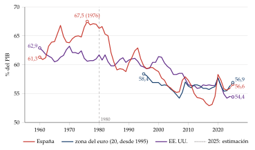
Fuente: elaboración propia a partir de Comisión Europea (2026) (serie ALCD0; zona del euro de 20 países desde 1995; 2025, estimación de la previsión de primavera de 2026).
Las explicaciones de la caída, una por viñeta:
la tecnología y el precio del capital: el abaratamiento de los bienes de inversión, sobre todo los informáticos, lleva a las empresas a sustituir trabajo por capital. Con una elasticidad de sustitución de en torno a 1,25, la caída del precio relativo de la inversión explica la mitad de la caída de la participación del trabajo. Su punto débil: casi todas las estimaciones de \(\sigma\) son menores que 1 [ver tema 3.A.11];
la globalización: la deslocalización de las fases de la producción más intensivas en trabajo, en los sectores más expuestos a las importaciones [ver tema 3.B.9]; y un tercio de la caída medida en Estados Unidos es un artefacto de cómo se imputa la renta de los autónomos;
las empresas «superestrella»: si la tecnología o la globalización favorecen a las empresas más productivas, que emplean poco trabajo para lo que venden, la concentración sube y la participación agregada del trabajo cae por reasignación entre empresas, aunque dentro de cada empresa no cambie25;
el poder de mercado: el margen medio de las empresas cotizadas de Estados Unidos sobre el coste marginal sube del 21 % en 1980 al 61 % en 2016. Con márgenes, una parte de la renta no remunera al trabajo ni al capital: es renta de monopolio, y caen las 2 participaciones [ver tema 3.A.15]. Para Philippon (2019), la competencia se ha debilitado en Estados Unidos más que en Europa;
las instituciones del mercado de trabajo: la menor afiliación sindical y una negociación colectiva más débil reducen el poder negociador de los trabajadores; su peso es discutido.
e) Valoración
Ninguna explicación lo explica todo. La de las superestrellas y los márgenes encaja con que la caída se concentre en Estados Unidos y con que los beneficios suban a la vez, lo que enlaza el reparto con la competencia; la del precio del capital, con que la caída sea general, pero exige una \(\sigma\) que pocos estiman.
El quinto hecho de Kaldor ya no es un dato que la teoría pueda dar por supuesto: obliga a abandonar la Cobb-Douglas o la competencia perfecta y, para la contabilidad del crecimiento, a usar participaciones que cambian con el tiempo.
B. Anexo: las herramientas econométricas del tema
Notación: en este anexo, \(Y_i\), \(X_i\) y \(Z_i\) son variables genéricas de una regresión (no la producción) y \(\beta_0\), \(\beta_1\), \(\beta_2\), sus coeficientes.
Mínimos cuadrados ordinarios (MCO): en \(Y_i=\beta_0+\beta_1X_i+u_i\), el estimador \(\hat\beta_1=\widehat{\mathrm{cov}}(X,Y)/\widehat{\mathrm{var}}(X)\) es consistente si la perturbación no está correlacionada con el regresor, \(\mathrm{cov}(X,u)=0\).
Sesgo de variable omitida: si el modelo verdadero es \(Y_i=\beta_0+\beta_1X_i+\beta_2Z_i+u_i\) y se omite \(Z\), \[\operatorname{plim}\hat\beta_1=\beta_1+\beta_2\,\frac{\mathrm{cov}(X,Z)}{\mathrm{var}(X)} .\] Es lo que pasa en la regresión de convergencia absoluta: los países pobres (\(X\) bajo) ahorran menos (\(Z\) bajo, \(\mathrm{cov}>0\)) y el ahorro eleva el crecimiento (\(\beta_2>0\)), así que el coeficiente de la renta inicial se sesga al alza y oculta la convergencia (apartado II.2). También hay variables omitidas en la relación entre instituciones y renta.
Endogeneidad: si \(X\) depende de \(Y\) (causalidad inversa o simultaneidad) o se mide con error, también \(\mathrm{cov}(X,u)\neq0\). Es el caso de los factores y la PTF en el enfoque econométrico, del gasto público y el crecimiento, y de las instituciones y la renta. El error de medida sesga el coeficiente hacia cero.
Variables instrumentales (VI): un instrumento \(Z\) cumple 2 condiciones, la relevancia (\(\mathrm{cov}(Z,X)\neq0\)) y la exclusión (\(\mathrm{cov}(Z,u)=0\): solo afecta a \(Y\) a través de \(X\)). Entonces \(\hat\beta_1^{\mathrm{VI}}=\widehat{\mathrm{cov}}(Z,Y)/\widehat{\mathrm{cov}}(Z,X)\) es consistente. En 2 etapas: se estima \(X\) con \(Z\) y se usa la \(X\) estimada en la regresión de \(Y\). Ejemplos del tema: la mortalidad de los colonos para las instituciones (13) y la geografía para el comercio. La relevancia se contrasta con los datos; la exclusión, no: hay que defenderla con argumentos.
Multicolinealidad: si varias variables explicativas están muy correlacionadas entre sí, es difícil separar el efecto de cada una; los coeficientes son imprecisos y cambian mucho al añadir o quitar variables.
Datos de panel: con medias de 5 años de cada país se suavizan los efectos del ciclo y se recogen los de medio plazo; los efectos fijos de país eliminan lo que no cambia en el tiempo, como la geografía, a cambio de no poder estimar su efecto.
Robustez: el análisis de cotas extremas considera robusta una variable si su coeficiente conserva el signo y la significación en todas las regresiones con cualquier combinación de controles; los promedios bayesianos de modelos ponderan cada regresión por su ajuste y dan la probabilidad de que cada variable pertenezca al modelo.
C. Anexo: preguntas de test
Preguntas tipo test del primer ejercicio: simulador de test.
Bibliografía

Robert Lucas recibió el Premio Nobel de Economía en 1995 «por haber desarrollado y aplicado la hipótesis de las expectativas racionales, transformando así el análisis macroeconómico y profundizando en nuestra comprensión de la política económica».↩︎
La cifra de la India de 2022 sale de una encuesta de gasto nueva, con otro cuestionario, y no es del todo comparable con las anteriores.↩︎
Smith (1776) vio en la división del trabajo la fuente de las ganancias de productividad; Ricardo (1817), en el comercio internacional la forma de escapar de los rendimientos decrecientes de la tierra, y Malthus (1798), en la presión de la población sobre los recursos el freno de la renta por habitante. Desde entonces, la renta por habitante de Estados Unidos y de Europa occidental se ha multiplicado por entre 12 y 23 en 2 siglos, y por entre 5 y 10 en el último.↩︎
Robert Solow recibió el Premio Nobel de Economía en 1987 «por sus contribuciones a la teoría del crecimiento económico».↩︎
Con datos de 3 décadas, Panagariya (2004) divide a los países en 3 grupos: los milagros, con un crecimiento medio por habitante de más del 3 % anual; los desastres, con un crecimiento nulo o negativo, y el resto. Los 2 extremos aparecen en todos los continentes.↩︎
Los niveles son PIB por habitante en paridad de poder adquisitivo encadenada, en dólares de 2021 (la serie rgdpe de la Penn World Table), que sirve para comparar países en un año; las tasas de crecimiento se calculan con el PIB a precios nacionales constantes (rgdpna), que sirve para medir el crecimiento de cada país. Por eso el cociente de los niveles de 1960 y 2023 no coincide exactamente con el crecimiento acumulado. Las cifras de Nigeria dependen mucho de la fuente. Con el Maddison Project 2023, en 1960 Corea del Sur ya era algo más rica que Nigeria (1.548 frente a 1.307 dólares de 2011) y Nigeria creció un 2,2 % anual entre 1960 y 2022, no un 0,5 %; en 2022, la renta de Corea del Sur es 8 veces la de Nigeria. El patrón es el mismo: una se acercó a la frontera y la otra se quedó lejos.↩︎
En el artículo de Kaldor (1961), el quinto hecho es, en rigor, una correlación alta entre la participación de los beneficios en la renta y la de la inversión en la producción, de modo que las participaciones son estables donde la inversión lo es. Es el hecho que más se discute hoy: la participación del trabajo ha caído en buena parte de las economías avanzadas desde los 80 (anexo A), y también hay indicios de que la rentabilidad real del capital tiende a bajar hacia un cierto rango a medida que una economía se desarrolla.↩︎
Es el mismo razonamiento que el de los hechos de Kaldor: si el capital por trabajador aumenta sin que caiga su rendimiento, es porque el progreso técnico impide que caiga su producto marginal. Con el capital humano ocurre lo mismo: el aumento sostenido del trabajo cualificado frente al no cualificado no ha abaratado el primero, y una interpretación es que el progreso técnico sesgado hacia la cualificación ha aumentado su demanda relativa al mismo ritmo que su oferta.↩︎
La neutralidad de Hicks desplaza la función sin cambiar la relación marginal de sustitución técnica para cada proporción \(K/L\): aumenta por igual la productividad de los 2 factores. Las definiciones de Hicks, Harrod y Solow, y por qué coinciden con una Cobb-Douglas, se estudian aparte [ver tema 3.A.11].↩︎
La función nació así. A principios del siglo XX, el economista Paul Douglas, más tarde senador por Illinois, observó que el reparto de la renta de Estados Unidos entre trabajadores y capitalistas era casi constante, en torno al 70 y al 30 %, y preguntó a su colega matemático Charles Cobb qué función de producción daría participaciones constantes si cada factor cobraba su producto marginal. La respuesta fue \(Y=A\,K^{\alpha}L^{1-\alpha}\).↩︎
\(A^{\mathrm{H}}\), con superíndice en redonda, es local de esta caja.↩︎
Si se cumple \(Y=rK+wL\), los 2 enfoques tienen que dar el mismo resultado, y cualquier diferencia solo puede venir de usar fuentes de datos distintas.↩︎
Como en el crecimiento exógeno, \(\phi\) es aquí una función local [ver tema 3.A.43]. Aquí \(A\) aumenta el trabajo, como en Hall y Jones (1999): la PTF de Hicks sería \(A^{1-\alpha}\) (apartado I.2.1).↩︎
Cálculo propio, el mismo que en otro tema [ver tema 3.A.43], con la Penn World Table 11.0, países no petroleros de al menos un millón de habitantes y \(g+\delta=0{,}05\).↩︎
En 1988, la producción por trabajador de Estados Unidos era más de 35 veces la de Níger, el país más pobre de la muestra.↩︎
Caselli (2005) escribe la PTF neutral en el sentido de Hicks; con una Cobb-Douglas es solo otra forma de escribir la misma tecnología (apartado I.2.1).↩︎
La productividad media del trabajo es la producción por hora u ocupado; la PTF mide la diferencia entre el crecimiento de la producción y el crecimiento ponderado de los factores, con los supuestos del apartado I.2.1 (competencia perfecta, productores que asignan los recursos con eficiencia). Si crece, la producción aumenta más que los factores: es un indicador de progreso y de mejora del nivel de vida. Medir la PTF de otra forma, con fronteras de producción, permite separar el desplazamiento de la frontera (cambio técnico) del acercamiento a ella (cambio en la eficiencia), con el índice de Malmquist [ver tema 3.A.12].↩︎
\(\beta_0\) y \(\beta_1\), con subíndice, son coeficientes de regresión; \(\beta\) sin subíndice es, en este tema, la elasticidad del capital humano en el modelo de Mankiw, Romer y Weil. El crecimiento se mide en la práctica como media de un periodo de \(T\) años, \(\frac1T\ln(y_t/y_{t-T})\).↩︎
Aquí hay que tener mucho cuidado con la causalidad simultánea: un crecimiento bajo también puede llevar a más inflación.↩︎
Douglass North recibió el Premio Nobel de Economía en 1993, con Robert Fogel, «por haber renovado la investigación en historia económica aplicando la teoría económica y métodos cuantitativos para explicar el cambio económico e institucional».↩︎
El Consenso de Washington es el conjunto de 10 recomendaciones de política económica que John Williamson formuló en 1989 para los países en desarrollo en crisis: disciplina fiscal, liberalización comercial, privatización de empresas públicas o desregulación de los mercados, entre otras. Lo impulsaron el Fondo Monetario Internacional, el Banco Mundial y el Tesoro de Estados Unidos.↩︎
Notación local de esta caja: \(\zeta\), \(\mu\), \(\beta_1\), \(\beta_2\) son coeficientes y no tienen relación con los símbolos del mismo nombre del resto del tema.↩︎
Sobre el orden de las reformas, Giavazzi y Tabellini (2005) encuentran que los países que liberalizan antes su economía y después se democratizan obtienen mejores resultados que los que lo hacen al revés.↩︎
Aquí \(\sigma\) es la elasticidad de sustitución entre el capital y el trabajo; en el bloque II, \(\sigma_{y,t}\) es la dispersión de las rentas entre países. No conviven en un mismo apartado.↩︎
La concentración puede deberse a las economías de escala y de red de la economía digital: solo las empresas más grandes pueden afrontar las grandes inversiones en datos, ordenadores y talento que exige competir.↩︎